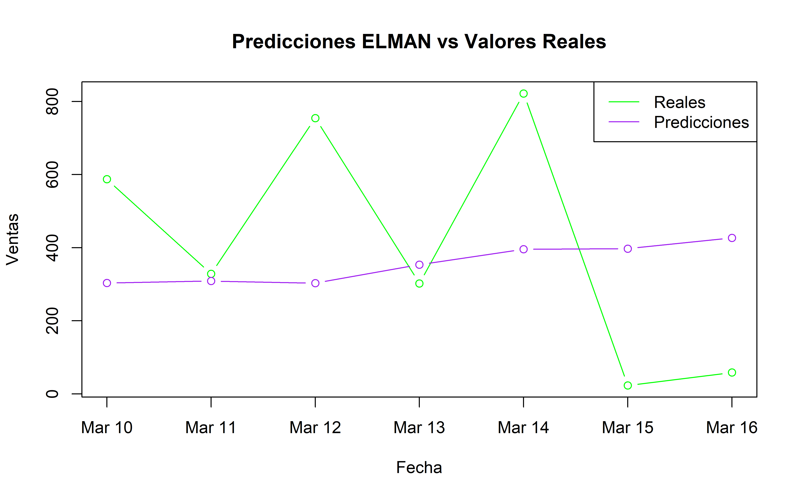
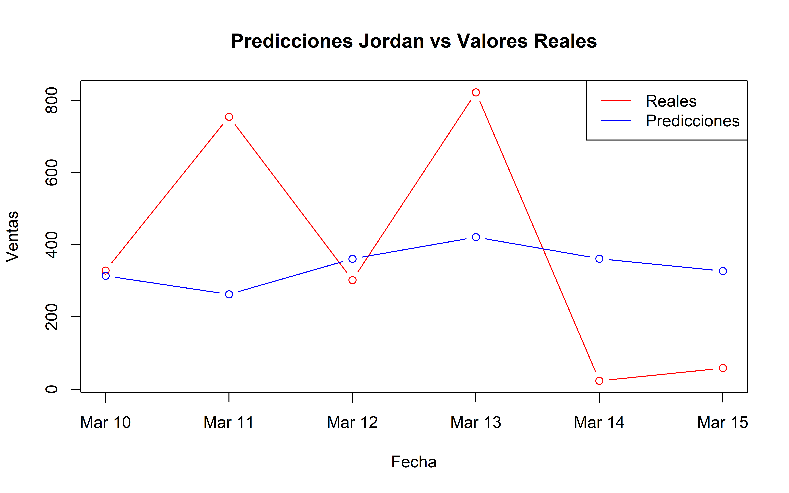

Capítulo 6 Redes neuronales ELMAN y Jordan
En este capítulo se van a aplicar los modelos de redes neuronales ELMAN y Jordan comparando sus resultados contra los modelos anteriores para buscar cual es más adecuado para predecir las ventas.
Se inicia la preparación de los datos completando los días faltantes en la base de datos. Estos valores faltantes pueden ser días que no hubo venta o que no se subieron al repositorio, como no se tiene claro se van a agregar y se van a imputar sus valores usando interpolación lineal. Esto se hace porque estas redes neuronales son modelos recurrentes y dependen de una secuencia temporal continua para capturar dependencias temporales.
Como las ventas presentan un comportamiento cíclico semanal se van a crear variables desfasadas con un valor de 7 para tener en cuenta esta cantidad de días en el modelo. Después se separan los conjuntos de entrenamiento y prueba y se normalizan debido a que las redes neuronales son sensibles a las escalas de los valores.
6.1 ELMAN
Estructura: Es una red recurrente con una capa de entrada, una capa oculta, una capa de salida y una capa de contexto. La capa de contexto almacena las activaciones de las unidades ocultas del paso anterior y las retroalimenta como entrada adicional en el paso siguiente.
Figure 6.1: Estrutura red ELMAN
El modelo se entrenó con los siguientes parámetros usando la librería keras:
units = 10 Este parámetro indica el número de neuronas de las capas ocultas y de contexto. Esta librería gestiona ambas capas automáticamente.
epochs = 250 Este parámetro indica la cantidad de veces que el modelo repasa el conjunto de entrenamiento. Cada vez que esto ocurre se calculan nuevos gradientes para ajustar los pesos de la red neuronal para reducir la perdida.
batch_size = 2 Indica el número de muestras procesadas antes de actualizar los pesos en cada iteración.
validation_split = 0.2: Con este parámetro se reserva el 20% de los datos de entrenamiento para validar el modelo durante el entrenamiento para evitar el sobreajuste.
## Epoch 1/250
## 150/150 - 8s - loss: 0.0623 - val_loss: 0.0505 - 8s/epoch - 51ms/step
## Epoch 2/250
## 150/150 - 2s - loss: 0.0332 - val_loss: 0.0450 - 2s/epoch - 12ms/step
## Epoch 3/250
## 150/150 - 2s - loss: 0.0290 - val_loss: 0.0431 - 2s/epoch - 11ms/step
## Epoch 4/250
## 150/150 - 2s - loss: 0.0283 - val_loss: 0.0426 - 2s/epoch - 11ms/step
## Epoch 5/250
## 150/150 - 2s - loss: 0.0274 - val_loss: 0.0428 - 2s/epoch - 12ms/step
## Epoch 6/250
## 150/150 - 2s - loss: 0.0264 - val_loss: 0.0417 - 2s/epoch - 11ms/step
## Epoch 7/250
## 150/150 - 2s - loss: 0.0274 - val_loss: 0.0433 - 2s/epoch - 11ms/step
## Epoch 8/250
## 150/150 - 2s - loss: 0.0271 - val_loss: 0.0422 - 2s/epoch - 11ms/step
## Epoch 9/250
## 150/150 - 2s - loss: 0.0266 - val_loss: 0.0444 - 2s/epoch - 11ms/step
## Epoch 10/250
## 150/150 - 2s - loss: 0.0265 - val_loss: 0.0418 - 2s/epoch - 11ms/step
## Epoch 11/250
## 150/150 - 2s - loss: 0.0267 - val_loss: 0.0421 - 2s/epoch - 12ms/step
## Epoch 12/250
## 150/150 - 2s - loss: 0.0271 - val_loss: 0.0429 - 2s/epoch - 12ms/step
## Epoch 13/250
## 150/150 - 2s - loss: 0.0272 - val_loss: 0.0433 - 2s/epoch - 11ms/step
## Epoch 14/250
## 150/150 - 2s - loss: 0.0267 - val_loss: 0.0420 - 2s/epoch - 11ms/step
## Epoch 15/250
## 150/150 - 2s - loss: 0.0271 - val_loss: 0.0441 - 2s/epoch - 12ms/step
## Epoch 16/250
## 150/150 - 2s - loss: 0.0265 - val_loss: 0.0431 - 2s/epoch - 11ms/step
## Epoch 17/250
## 150/150 - 2s - loss: 0.0264 - val_loss: 0.0438 - 2s/epoch - 11ms/step
## Epoch 18/250
## 150/150 - 2s - loss: 0.0263 - val_loss: 0.0439 - 2s/epoch - 12ms/step
## Epoch 19/250
## 150/150 - 2s - loss: 0.0263 - val_loss: 0.0428 - 2s/epoch - 14ms/step
## Epoch 20/250
## 150/150 - 2s - loss: 0.0257 - val_loss: 0.0422 - 2s/epoch - 12ms/step
## Epoch 21/250
## 150/150 - 2s - loss: 0.0267 - val_loss: 0.0420 - 2s/epoch - 13ms/step
## Epoch 22/250
## 150/150 - 2s - loss: 0.0264 - val_loss: 0.0410 - 2s/epoch - 13ms/step
## Epoch 23/250
## 150/150 - 2s - loss: 0.0265 - val_loss: 0.0410 - 2s/epoch - 14ms/step
## Epoch 24/250
## 150/150 - 2s - loss: 0.0267 - val_loss: 0.0422 - 2s/epoch - 12ms/step
## Epoch 25/250
## 150/150 - 2s - loss: 0.0265 - val_loss: 0.0431 - 2s/epoch - 12ms/step
## Epoch 26/250
## 150/150 - 2s - loss: 0.0260 - val_loss: 0.0419 - 2s/epoch - 13ms/step
## Epoch 27/250
## 150/150 - 2s - loss: 0.0271 - val_loss: 0.0428 - 2s/epoch - 11ms/step
## Epoch 28/250
## 150/150 - 2s - loss: 0.0263 - val_loss: 0.0426 - 2s/epoch - 11ms/step
## Epoch 29/250
## 150/150 - 2s - loss: 0.0264 - val_loss: 0.0430 - 2s/epoch - 11ms/step
## Epoch 30/250
## 150/150 - 2s - loss: 0.0263 - val_loss: 0.0448 - 2s/epoch - 11ms/step
## Epoch 31/250
## 150/150 - 2s - loss: 0.0261 - val_loss: 0.0413 - 2s/epoch - 11ms/step
## Epoch 32/250
## 150/150 - 2s - loss: 0.0264 - val_loss: 0.0423 - 2s/epoch - 12ms/step
## Epoch 33/250
## 150/150 - 2s - loss: 0.0261 - val_loss: 0.0427 - 2s/epoch - 14ms/step
## Epoch 34/250
## 150/150 - 2s - loss: 0.0263 - val_loss: 0.0411 - 2s/epoch - 14ms/step
## Epoch 35/250
## 150/150 - 2s - loss: 0.0268 - val_loss: 0.0442 - 2s/epoch - 12ms/step
## Epoch 36/250
## 150/150 - 2s - loss: 0.0262 - val_loss: 0.0429 - 2s/epoch - 16ms/step
## Epoch 37/250
## 150/150 - 3s - loss: 0.0262 - val_loss: 0.0416 - 3s/epoch - 18ms/step
## Epoch 38/250
## 150/150 - 3s - loss: 0.0261 - val_loss: 0.0426 - 3s/epoch - 19ms/step
## Epoch 39/250
## 150/150 - 2s - loss: 0.0262 - val_loss: 0.0415 - 2s/epoch - 14ms/step
## Epoch 40/250
## 150/150 - 2s - loss: 0.0261 - val_loss: 0.0422 - 2s/epoch - 14ms/step
## Epoch 41/250
## 150/150 - 2s - loss: 0.0260 - val_loss: 0.0436 - 2s/epoch - 12ms/step
## Epoch 42/250
## 150/150 - 2s - loss: 0.0258 - val_loss: 0.0450 - 2s/epoch - 12ms/step
## Epoch 43/250
## 150/150 - 2s - loss: 0.0258 - val_loss: 0.0447 - 2s/epoch - 13ms/step
## Epoch 44/250
## 150/150 - 2s - loss: 0.0263 - val_loss: 0.0425 - 2s/epoch - 12ms/step
## Epoch 45/250
## 150/150 - 2s - loss: 0.0266 - val_loss: 0.0433 - 2s/epoch - 11ms/step
## Epoch 46/250
## 150/150 - 2s - loss: 0.0263 - val_loss: 0.0417 - 2s/epoch - 11ms/step
## Epoch 47/250
## 150/150 - 2s - loss: 0.0260 - val_loss: 0.0425 - 2s/epoch - 12ms/step
## Epoch 48/250
## 150/150 - 2s - loss: 0.0264 - val_loss: 0.0418 - 2s/epoch - 11ms/step
## Epoch 49/250
## 150/150 - 2s - loss: 0.0260 - val_loss: 0.0428 - 2s/epoch - 12ms/step
## Epoch 50/250
## 150/150 - 2s - loss: 0.0260 - val_loss: 0.0419 - 2s/epoch - 12ms/step
## Epoch 51/250
## 150/150 - 2s - loss: 0.0257 - val_loss: 0.0403 - 2s/epoch - 11ms/step
## Epoch 52/250
## 150/150 - 2s - loss: 0.0260 - val_loss: 0.0406 - 2s/epoch - 13ms/step
## Epoch 53/250
## 150/150 - 2s - loss: 0.0261 - val_loss: 0.0428 - 2s/epoch - 14ms/step
## Epoch 54/250
## 150/150 - 2s - loss: 0.0260 - val_loss: 0.0423 - 2s/epoch - 14ms/step
## Epoch 55/250
## 150/150 - 2s - loss: 0.0261 - val_loss: 0.0420 - 2s/epoch - 11ms/step
## Epoch 56/250
## 150/150 - 2s - loss: 0.0259 - val_loss: 0.0451 - 2s/epoch - 11ms/step
## Epoch 57/250
## 150/150 - 2s - loss: 0.0262 - val_loss: 0.0418 - 2s/epoch - 11ms/step
## Epoch 58/250
## 150/150 - 2s - loss: 0.0263 - val_loss: 0.0424 - 2s/epoch - 11ms/step
## Epoch 59/250
## 150/150 - 2s - loss: 0.0259 - val_loss: 0.0406 - 2s/epoch - 11ms/step
## Epoch 60/250
## 150/150 - 2s - loss: 0.0261 - val_loss: 0.0416 - 2s/epoch - 11ms/step
## Epoch 61/250
## 150/150 - 2s - loss: 0.0263 - val_loss: 0.0429 - 2s/epoch - 11ms/step
## Epoch 62/250
## 150/150 - 2s - loss: 0.0265 - val_loss: 0.0418 - 2s/epoch - 11ms/step
## Epoch 63/250
## 150/150 - 2s - loss: 0.0265 - val_loss: 0.0420 - 2s/epoch - 11ms/step
## Epoch 64/250
## 150/150 - 2s - loss: 0.0259 - val_loss: 0.0423 - 2s/epoch - 11ms/step
## Epoch 65/250
## 150/150 - 2s - loss: 0.0260 - val_loss: 0.0416 - 2s/epoch - 11ms/step
## Epoch 66/250
## 150/150 - 2s - loss: 0.0263 - val_loss: 0.0419 - 2s/epoch - 12ms/step
## Epoch 67/250
## 150/150 - 2s - loss: 0.0262 - val_loss: 0.0431 - 2s/epoch - 12ms/step
## Epoch 68/250
## 150/150 - 2s - loss: 0.0262 - val_loss: 0.0428 - 2s/epoch - 13ms/step
## Epoch 69/250
## 150/150 - 2s - loss: 0.0259 - val_loss: 0.0433 - 2s/epoch - 12ms/step
## Epoch 70/250
## 150/150 - 2s - loss: 0.0259 - val_loss: 0.0438 - 2s/epoch - 12ms/step
## Epoch 71/250
## 150/150 - 2s - loss: 0.0261 - val_loss: 0.0420 - 2s/epoch - 15ms/step
## Epoch 72/250
## 150/150 - 2s - loss: 0.0260 - val_loss: 0.0419 - 2s/epoch - 13ms/step
## Epoch 73/250
## 150/150 - 2s - loss: 0.0264 - val_loss: 0.0430 - 2s/epoch - 13ms/step
## Epoch 74/250
## 150/150 - 3s - loss: 0.0260 - val_loss: 0.0417 - 3s/epoch - 18ms/step
## Epoch 75/250
## 150/150 - 2s - loss: 0.0263 - val_loss: 0.0417 - 2s/epoch - 16ms/step
## Epoch 76/250
## 150/150 - 2s - loss: 0.0260 - val_loss: 0.0409 - 2s/epoch - 15ms/step
## Epoch 77/250
## 150/150 - 3s - loss: 0.0258 - val_loss: 0.0424 - 3s/epoch - 19ms/step
## Epoch 78/250
## 150/150 - 2s - loss: 0.0262 - val_loss: 0.0418 - 2s/epoch - 14ms/step
## Epoch 79/250
## 150/150 - 2s - loss: 0.0257 - val_loss: 0.0408 - 2s/epoch - 12ms/step
## Epoch 80/250
## 150/150 - 2s - loss: 0.0259 - val_loss: 0.0414 - 2s/epoch - 12ms/step
## Epoch 81/250
## 150/150 - 2s - loss: 0.0261 - val_loss: 0.0420 - 2s/epoch - 13ms/step
## Epoch 82/250
## 150/150 - 2s - loss: 0.0264 - val_loss: 0.0413 - 2s/epoch - 12ms/step
## Epoch 83/250
## 150/150 - 2s - loss: 0.0259 - val_loss: 0.0421 - 2s/epoch - 13ms/step
## Epoch 84/250
## 150/150 - 2s - loss: 0.0256 - val_loss: 0.0414 - 2s/epoch - 13ms/step
## Epoch 85/250
## 150/150 - 2s - loss: 0.0262 - val_loss: 0.0419 - 2s/epoch - 13ms/step
## Epoch 86/250
## 150/150 - 2s - loss: 0.0262 - val_loss: 0.0422 - 2s/epoch - 11ms/step
## Epoch 87/250
## 150/150 - 2s - loss: 0.0261 - val_loss: 0.0420 - 2s/epoch - 13ms/step
## Epoch 88/250
## 150/150 - 2s - loss: 0.0262 - val_loss: 0.0418 - 2s/epoch - 15ms/step
## Epoch 89/250
## 150/150 - 2s - loss: 0.0259 - val_loss: 0.0409 - 2s/epoch - 15ms/step
## Epoch 90/250
## 150/150 - 2s - loss: 0.0260 - val_loss: 0.0408 - 2s/epoch - 14ms/step
## Epoch 91/250
## 150/150 - 2s - loss: 0.0262 - val_loss: 0.0419 - 2s/epoch - 11ms/step
## Epoch 92/250
## 150/150 - 2s - loss: 0.0265 - val_loss: 0.0411 - 2s/epoch - 12ms/step
## Epoch 93/250
## 150/150 - 2s - loss: 0.0259 - val_loss: 0.0417 - 2s/epoch - 12ms/step
## Epoch 94/250
## 150/150 - 2s - loss: 0.0258 - val_loss: 0.0409 - 2s/epoch - 13ms/step
## Epoch 95/250
## 150/150 - 2s - loss: 0.0260 - val_loss: 0.0403 - 2s/epoch - 16ms/step
## Epoch 96/250
## 150/150 - 2s - loss: 0.0261 - val_loss: 0.0409 - 2s/epoch - 16ms/step
## Epoch 97/250
## 150/150 - 2s - loss: 0.0260 - val_loss: 0.0420 - 2s/epoch - 13ms/step
## Epoch 98/250
## 150/150 - 2s - loss: 0.0261 - val_loss: 0.0416 - 2s/epoch - 12ms/step
## Epoch 99/250
## 150/150 - 2s - loss: 0.0260 - val_loss: 0.0412 - 2s/epoch - 12ms/step
## Epoch 100/250
## 150/150 - 2s - loss: 0.0256 - val_loss: 0.0405 - 2s/epoch - 12ms/step
## Epoch 101/250
## 150/150 - 2s - loss: 0.0256 - val_loss: 0.0407 - 2s/epoch - 13ms/step
## Epoch 102/250
## 150/150 - 5s - loss: 0.0260 - val_loss: 0.0416 - 5s/epoch - 35ms/step
## Epoch 103/250
## 150/150 - 4s - loss: 0.0257 - val_loss: 0.0411 - 4s/epoch - 24ms/step
## Epoch 104/250
## 150/150 - 3s - loss: 0.0261 - val_loss: 0.0403 - 3s/epoch - 21ms/step
## Epoch 105/250
## 150/150 - 2s - loss: 0.0256 - val_loss: 0.0403 - 2s/epoch - 16ms/step
## Epoch 106/250
## 150/150 - 2s - loss: 0.0256 - val_loss: 0.0406 - 2s/epoch - 14ms/step
## Epoch 107/250
## 150/150 - 2s - loss: 0.0263 - val_loss: 0.0408 - 2s/epoch - 12ms/step
## Epoch 108/250
## 150/150 - 2s - loss: 0.0258 - val_loss: 0.0415 - 2s/epoch - 12ms/step
## Epoch 109/250
## 150/150 - 2s - loss: 0.0258 - val_loss: 0.0401 - 2s/epoch - 16ms/step
## Epoch 110/250
## 150/150 - 2s - loss: 0.0259 - val_loss: 0.0403 - 2s/epoch - 14ms/step
## Epoch 111/250
## 150/150 - 2s - loss: 0.0258 - val_loss: 0.0405 - 2s/epoch - 12ms/step
## Epoch 112/250
## 150/150 - 3s - loss: 0.0258 - val_loss: 0.0428 - 3s/epoch - 18ms/step
## Epoch 113/250
## 150/150 - 3s - loss: 0.0261 - val_loss: 0.0408 - 3s/epoch - 18ms/step
## Epoch 114/250
## 150/150 - 2s - loss: 0.0260 - val_loss: 0.0409 - 2s/epoch - 12ms/step
## Epoch 115/250
## 150/150 - 2s - loss: 0.0263 - val_loss: 0.0418 - 2s/epoch - 12ms/step
## Epoch 116/250
## 150/150 - 2s - loss: 0.0259 - val_loss: 0.0413 - 2s/epoch - 15ms/step
## Epoch 117/250
## 150/150 - 2s - loss: 0.0258 - val_loss: 0.0406 - 2s/epoch - 14ms/step
## Epoch 118/250
## 150/150 - 2s - loss: 0.0258 - val_loss: 0.0402 - 2s/epoch - 12ms/step
## Epoch 119/250
## 150/150 - 3s - loss: 0.0262 - val_loss: 0.0405 - 3s/epoch - 18ms/step
## Epoch 120/250
## 150/150 - 2s - loss: 0.0261 - val_loss: 0.0414 - 2s/epoch - 13ms/step
## Epoch 121/250
## 150/150 - 2s - loss: 0.0262 - val_loss: 0.0412 - 2s/epoch - 12ms/step
## Epoch 122/250
## 150/150 - 2s - loss: 0.0257 - val_loss: 0.0402 - 2s/epoch - 13ms/step
## Epoch 123/250
## 150/150 - 2s - loss: 0.0257 - val_loss: 0.0412 - 2s/epoch - 12ms/step
## Epoch 124/250
## 150/150 - 2s - loss: 0.0256 - val_loss: 0.0404 - 2s/epoch - 14ms/step
## Epoch 125/250
## 150/150 - 2s - loss: 0.0259 - val_loss: 0.0402 - 2s/epoch - 14ms/step
## Epoch 126/250
## 150/150 - 2s - loss: 0.0257 - val_loss: 0.0401 - 2s/epoch - 12ms/step
## Epoch 127/250
## 150/150 - 2s - loss: 0.0257 - val_loss: 0.0403 - 2s/epoch - 12ms/step
## Epoch 128/250
## 150/150 - 2s - loss: 0.0257 - val_loss: 0.0401 - 2s/epoch - 13ms/step
## Epoch 129/250
## 150/150 - 2s - loss: 0.0257 - val_loss: 0.0405 - 2s/epoch - 12ms/step
## Epoch 130/250
## 150/150 - 2s - loss: 0.0255 - val_loss: 0.0407 - 2s/epoch - 12ms/step
## Epoch 131/250
## 150/150 - 2s - loss: 0.0259 - val_loss: 0.0406 - 2s/epoch - 12ms/step
## Epoch 132/250
## 150/150 - 3s - loss: 0.0258 - val_loss: 0.0409 - 3s/epoch - 18ms/step
## Epoch 133/250
## 150/150 - 4s - loss: 0.0257 - val_loss: 0.0411 - 4s/epoch - 28ms/step
## Epoch 134/250
## 150/150 - 4s - loss: 0.0259 - val_loss: 0.0406 - 4s/epoch - 28ms/step
## Epoch 135/250
## 150/150 - 2s - loss: 0.0257 - val_loss: 0.0402 - 2s/epoch - 14ms/step
## Epoch 136/250
## 150/150 - 2s - loss: 0.0260 - val_loss: 0.0411 - 2s/epoch - 11ms/step
## Epoch 137/250
## 150/150 - 2s - loss: 0.0259 - val_loss: 0.0405 - 2s/epoch - 11ms/step
## Epoch 138/250
## 150/150 - 2s - loss: 0.0258 - val_loss: 0.0400 - 2s/epoch - 11ms/step
## Epoch 139/250
## 150/150 - 2s - loss: 0.0256 - val_loss: 0.0401 - 2s/epoch - 11ms/step
## Epoch 140/250
## 150/150 - 2s - loss: 0.0249 - val_loss: 0.0422 - 2s/epoch - 12ms/step
## Epoch 141/250
## 150/150 - 2s - loss: 0.0266 - val_loss: 0.0394 - 2s/epoch - 11ms/step
## Epoch 142/250
## 150/150 - 2s - loss: 0.0258 - val_loss: 0.0396 - 2s/epoch - 11ms/step
## Epoch 143/250
## 150/150 - 2s - loss: 0.0257 - val_loss: 0.0404 - 2s/epoch - 11ms/step
## Epoch 144/250
## 150/150 - 2s - loss: 0.0258 - val_loss: 0.0401 - 2s/epoch - 13ms/step
## Epoch 145/250
## 150/150 - 2s - loss: 0.0258 - val_loss: 0.0406 - 2s/epoch - 12ms/step
## Epoch 146/250
## 150/150 - 2s - loss: 0.0258 - val_loss: 0.0413 - 2s/epoch - 15ms/step
## Epoch 147/250
## 150/150 - 2s - loss: 0.0256 - val_loss: 0.0403 - 2s/epoch - 16ms/step
## Epoch 148/250
## 150/150 - 2s - loss: 0.0257 - val_loss: 0.0400 - 2s/epoch - 14ms/step
## Epoch 149/250
## 150/150 - 2s - loss: 0.0258 - val_loss: 0.0403 - 2s/epoch - 16ms/step
## Epoch 150/250
## 150/150 - 3s - loss: 0.0252 - val_loss: 0.0397 - 3s/epoch - 20ms/step
## Epoch 151/250
## 150/150 - 2s - loss: 0.0261 - val_loss: 0.0404 - 2s/epoch - 16ms/step
## Epoch 152/250
## 150/150 - 2s - loss: 0.0258 - val_loss: 0.0403 - 2s/epoch - 14ms/step
## Epoch 153/250
## 150/150 - 2s - loss: 0.0254 - val_loss: 0.0406 - 2s/epoch - 12ms/step
## Epoch 154/250
## 150/150 - 2s - loss: 0.0257 - val_loss: 0.0399 - 2s/epoch - 13ms/step
## Epoch 155/250
## 150/150 - 2s - loss: 0.0257 - val_loss: 0.0391 - 2s/epoch - 13ms/step
## Epoch 156/250
## 150/150 - 2s - loss: 0.0260 - val_loss: 0.0396 - 2s/epoch - 12ms/step
## Epoch 157/250
## 150/150 - 2s - loss: 0.0259 - val_loss: 0.0398 - 2s/epoch - 12ms/step
## Epoch 158/250
## 150/150 - 2s - loss: 0.0261 - val_loss: 0.0398 - 2s/epoch - 12ms/step
## Epoch 159/250
## 150/150 - 2s - loss: 0.0257 - val_loss: 0.0396 - 2s/epoch - 16ms/step
## Epoch 160/250
## 150/150 - 2s - loss: 0.0257 - val_loss: 0.0398 - 2s/epoch - 14ms/step
## Epoch 161/250
## 150/150 - 2s - loss: 0.0257 - val_loss: 0.0402 - 2s/epoch - 12ms/step
## Epoch 162/250
## 150/150 - 2s - loss: 0.0258 - val_loss: 0.0401 - 2s/epoch - 12ms/step
## Epoch 163/250
## 150/150 - 2s - loss: 0.0257 - val_loss: 0.0398 - 2s/epoch - 12ms/step
## Epoch 164/250
## 150/150 - 2s - loss: 0.0257 - val_loss: 0.0396 - 2s/epoch - 15ms/step
## Epoch 165/250
## 150/150 - 2s - loss: 0.0256 - val_loss: 0.0401 - 2s/epoch - 12ms/step
## Epoch 166/250
## 150/150 - 2s - loss: 0.0259 - val_loss: 0.0401 - 2s/epoch - 12ms/step
## Epoch 167/250
## 150/150 - 2s - loss: 0.0259 - val_loss: 0.0396 - 2s/epoch - 16ms/step
## Epoch 168/250
## 150/150 - 4s - loss: 0.0259 - val_loss: 0.0402 - 4s/epoch - 25ms/step
## Epoch 169/250
## 150/150 - 4s - loss: 0.0258 - val_loss: 0.0401 - 4s/epoch - 28ms/step
## Epoch 170/250
## 150/150 - 3s - loss: 0.0261 - val_loss: 0.0404 - 3s/epoch - 17ms/step
## Epoch 171/250
## 150/150 - 3s - loss: 0.0258 - val_loss: 0.0399 - 3s/epoch - 22ms/step
## Epoch 172/250
## 150/150 - 2s - loss: 0.0258 - val_loss: 0.0393 - 2s/epoch - 15ms/step
## Epoch 173/250
## 150/150 - 3s - loss: 0.0256 - val_loss: 0.0400 - 3s/epoch - 17ms/step
## Epoch 174/250
## 150/150 - 4s - loss: 0.0261 - val_loss: 0.0400 - 4s/epoch - 23ms/step
## Epoch 175/250
## 150/150 - 4s - loss: 0.0254 - val_loss: 0.0405 - 4s/epoch - 27ms/step
## Epoch 176/250
## 150/150 - 3s - loss: 0.0258 - val_loss: 0.0404 - 3s/epoch - 17ms/step
## Epoch 177/250
## 150/150 - 2s - loss: 0.0256 - val_loss: 0.0401 - 2s/epoch - 13ms/step
## Epoch 178/250
## 150/150 - 2s - loss: 0.0258 - val_loss: 0.0396 - 2s/epoch - 11ms/step
## Epoch 179/250
## 150/150 - 2s - loss: 0.0257 - val_loss: 0.0403 - 2s/epoch - 12ms/step
## Epoch 180/250
## 150/150 - 2s - loss: 0.0256 - val_loss: 0.0397 - 2s/epoch - 11ms/step
## Epoch 181/250
## 150/150 - 5s - loss: 0.0257 - val_loss: 0.0395 - 5s/epoch - 35ms/step
## Epoch 182/250
## 150/150 - 9s - loss: 0.0259 - val_loss: 0.0396 - 9s/epoch - 58ms/step
## Epoch 183/250
## 150/150 - 9s - loss: 0.0257 - val_loss: 0.0392 - 9s/epoch - 62ms/step
## Epoch 184/250
## 150/150 - 3s - loss: 0.0257 - val_loss: 0.0394 - 3s/epoch - 21ms/step
## Epoch 185/250
## 150/150 - 3s - loss: 0.0257 - val_loss: 0.0397 - 3s/epoch - 17ms/step
## Epoch 186/250
## 150/150 - 2s - loss: 0.0261 - val_loss: 0.0401 - 2s/epoch - 16ms/step
## Epoch 187/250
## 150/150 - 3s - loss: 0.0259 - val_loss: 0.0398 - 3s/epoch - 18ms/step
## Epoch 188/250
## 150/150 - 2s - loss: 0.0256 - val_loss: 0.0395 - 2s/epoch - 15ms/step
## Epoch 189/250
## 150/150 - 2s - loss: 0.0255 - val_loss: 0.0396 - 2s/epoch - 12ms/step
## Epoch 190/250
## 150/150 - 2s - loss: 0.0259 - val_loss: 0.0393 - 2s/epoch - 15ms/step
## Epoch 191/250
## 150/150 - 3s - loss: 0.0257 - val_loss: 0.0396 - 3s/epoch - 20ms/step
## Epoch 192/250
## 150/150 - 4s - loss: 0.0255 - val_loss: 0.0401 - 4s/epoch - 24ms/step
## Epoch 193/250
## 150/150 - 2s - loss: 0.0259 - val_loss: 0.0391 - 2s/epoch - 16ms/step
## Epoch 194/250
## 150/150 - 2s - loss: 0.0255 - val_loss: 0.0398 - 2s/epoch - 15ms/step
## Epoch 195/250
## 150/150 - 2s - loss: 0.0257 - val_loss: 0.0398 - 2s/epoch - 13ms/step
## Epoch 196/250
## 150/150 - 2s - loss: 0.0256 - val_loss: 0.0401 - 2s/epoch - 13ms/step
## Epoch 197/250
## 150/150 - 4s - loss: 0.0259 - val_loss: 0.0393 - 4s/epoch - 28ms/step
## Epoch 198/250
## 150/150 - 4s - loss: 0.0256 - val_loss: 0.0395 - 4s/epoch - 30ms/step
## Epoch 199/250
## 150/150 - 2s - loss: 0.0259 - val_loss: 0.0396 - 2s/epoch - 16ms/step
## Epoch 200/250
## 150/150 - 4s - loss: 0.0259 - val_loss: 0.0396 - 4s/epoch - 25ms/step
## Epoch 201/250
## 150/150 - 3s - loss: 0.0257 - val_loss: 0.0395 - 3s/epoch - 22ms/step
## Epoch 202/250
## 150/150 - 2s - loss: 0.0256 - val_loss: 0.0397 - 2s/epoch - 16ms/step
## Epoch 203/250
## 150/150 - 2s - loss: 0.0257 - val_loss: 0.0394 - 2s/epoch - 12ms/step
## Epoch 204/250
## 150/150 - 2s - loss: 0.0252 - val_loss: 0.0398 - 2s/epoch - 14ms/step
## Epoch 205/250
## 150/150 - 3s - loss: 0.0260 - val_loss: 0.0389 - 3s/epoch - 17ms/step
## Epoch 206/250
## 150/150 - 5s - loss: 0.0259 - val_loss: 0.0391 - 5s/epoch - 31ms/step
## Epoch 207/250
## 150/150 - 2s - loss: 0.0255 - val_loss: 0.0395 - 2s/epoch - 16ms/step
## Epoch 208/250
## 150/150 - 2s - loss: 0.0255 - val_loss: 0.0387 - 2s/epoch - 12ms/step
## Epoch 209/250
## 150/150 - 2s - loss: 0.0261 - val_loss: 0.0390 - 2s/epoch - 12ms/step
## Epoch 210/250
## 150/150 - 2s - loss: 0.0253 - val_loss: 0.0391 - 2s/epoch - 12ms/step
## Epoch 211/250
## 150/150 - 2s - loss: 0.0256 - val_loss: 0.0393 - 2s/epoch - 11ms/step
## Epoch 212/250
## 150/150 - 2s - loss: 0.0255 - val_loss: 0.0384 - 2s/epoch - 14ms/step
## Epoch 213/250
## 150/150 - 2s - loss: 0.0254 - val_loss: 0.0392 - 2s/epoch - 14ms/step
## Epoch 214/250
## 150/150 - 2s - loss: 0.0255 - val_loss: 0.0393 - 2s/epoch - 14ms/step
## Epoch 215/250
## 150/150 - 2s - loss: 0.0255 - val_loss: 0.0393 - 2s/epoch - 11ms/step
## Epoch 216/250
## 150/150 - 3s - loss: 0.0255 - val_loss: 0.0385 - 3s/epoch - 19ms/step
## Epoch 217/250
## 150/150 - 4s - loss: 0.0258 - val_loss: 0.0386 - 4s/epoch - 25ms/step
## Epoch 218/250
## 150/150 - 2s - loss: 0.0256 - val_loss: 0.0390 - 2s/epoch - 15ms/step
## Epoch 219/250
## 150/150 - 2s - loss: 0.0255 - val_loss: 0.0393 - 2s/epoch - 11ms/step
## Epoch 220/250
## 150/150 - 2s - loss: 0.0256 - val_loss: 0.0396 - 2s/epoch - 11ms/step
## Epoch 221/250
## 150/150 - 2s - loss: 0.0254 - val_loss: 0.0391 - 2s/epoch - 17ms/step
## Epoch 222/250
## 150/150 - 2s - loss: 0.0258 - val_loss: 0.0395 - 2s/epoch - 12ms/step
## Epoch 223/250
## 150/150 - 2s - loss: 0.0258 - val_loss: 0.0397 - 2s/epoch - 12ms/step
## Epoch 224/250
## 150/150 - 2s - loss: 0.0254 - val_loss: 0.0394 - 2s/epoch - 12ms/step
## Epoch 225/250
## 150/150 - 2s - loss: 0.0257 - val_loss: 0.0398 - 2s/epoch - 13ms/step
## Epoch 226/250
## 150/150 - 4s - loss: 0.0254 - val_loss: 0.0389 - 4s/epoch - 26ms/step
## Epoch 227/250
## 150/150 - 2s - loss: 0.0254 - val_loss: 0.0386 - 2s/epoch - 16ms/step
## Epoch 228/250
## 150/150 - 4s - loss: 0.0255 - val_loss: 0.0392 - 4s/epoch - 24ms/step
## Epoch 229/250
## 150/150 - 3s - loss: 0.0256 - val_loss: 0.0392 - 3s/epoch - 21ms/step
## Epoch 230/250
## 150/150 - 3s - loss: 0.0255 - val_loss: 0.0391 - 3s/epoch - 22ms/step
## Epoch 231/250
## 150/150 - 3s - loss: 0.0256 - val_loss: 0.0389 - 3s/epoch - 17ms/step
## Epoch 232/250
## 150/150 - 4s - loss: 0.0254 - val_loss: 0.0391 - 4s/epoch - 25ms/step
## Epoch 233/250
## 150/150 - 3s - loss: 0.0255 - val_loss: 0.0388 - 3s/epoch - 21ms/step
## Epoch 234/250
## 150/150 - 3s - loss: 0.0256 - val_loss: 0.0391 - 3s/epoch - 18ms/step
## Epoch 235/250
## 150/150 - 3s - loss: 0.0256 - val_loss: 0.0386 - 3s/epoch - 17ms/step
## Epoch 236/250
## 150/150 - 2s - loss: 0.0256 - val_loss: 0.0388 - 2s/epoch - 12ms/step
## Epoch 237/250
## 150/150 - 2s - loss: 0.0256 - val_loss: 0.0385 - 2s/epoch - 15ms/step
## Epoch 238/250
## 150/150 - 2s - loss: 0.0258 - val_loss: 0.0385 - 2s/epoch - 14ms/step
## Epoch 239/250
## 150/150 - 2s - loss: 0.0255 - val_loss: 0.0387 - 2s/epoch - 12ms/step
## Epoch 240/250
## 150/150 - 2s - loss: 0.0255 - val_loss: 0.0393 - 2s/epoch - 14ms/step
## Epoch 241/250
## 150/150 - 2s - loss: 0.0258 - val_loss: 0.0391 - 2s/epoch - 13ms/step
## Epoch 242/250
## 150/150 - 2s - loss: 0.0255 - val_loss: 0.0390 - 2s/epoch - 13ms/step
## Epoch 243/250
## 150/150 - 2s - loss: 0.0256 - val_loss: 0.0386 - 2s/epoch - 15ms/step
## Epoch 244/250
## 150/150 - 2s - loss: 0.0254 - val_loss: 0.0389 - 2s/epoch - 16ms/step
## Epoch 245/250
## 150/150 - 6s - loss: 0.0253 - val_loss: 0.0393 - 6s/epoch - 41ms/step
## Epoch 246/250
## 150/150 - 4s - loss: 0.0255 - val_loss: 0.0389 - 4s/epoch - 24ms/step
## Epoch 247/250
## 150/150 - 3s - loss: 0.0256 - val_loss: 0.0391 - 3s/epoch - 22ms/step
## Epoch 248/250
## 150/150 - 2s - loss: 0.0257 - val_loss: 0.0387 - 2s/epoch - 14ms/step
## Epoch 249/250
## 150/150 - 2s - loss: 0.0257 - val_loss: 0.0385 - 2s/epoch - 16ms/step
## Epoch 250/250
## 150/150 - 2s - loss: 0.0256 - val_loss: 0.0389 - 2s/epoch - 16ms/stepDespués de entrenar la red neuronal estos fueron los resultados.
## 1/1 - 1s - 1s/epoch - 1s/step## RMSE Keras ELMAN: 326.2161## MAE Keras ELMAN: 282.2296 En la grafica de real vs predicciones se ve que el modelo se mantiene en el promedio de las ventas reales, con esto se puede concluir que el modelo no es capaz de predecir los comportamientos atipicos de ventas, esto es un resultado parecido al modelo prophet.
Figure 6.2: Estrutura red ELMAN
Esta gráfica representa la evolución de la función de pérdida a lo largo de las 200 épocas del modelo. El eje x muestra el número de épocas y el eje y muestra el valor de la pérdida.
Loss (Línea azul) representa el valor de la función de pérdida (mse) el conjunto de entrenamiento después de cada época. Mide cuán lejos están las predicciones del modelo de los valores reales en los datos con los que se entrena.
Val_loss (Línea verde) representa la misma funcion de perdida de loss pero contra el conjunto de validación. Esta linea indica si el modelo está aprendiendo patrones útiles o sobreajustando. Si val_loss aumenta mientras loss disminuye, es una señal de sobreajuste.
Ambas líneas disminuyen la perdida rápidamente antes de las 50 epocas y luego se estabilizan. Esto indica que el modelo encuentra una configuración de pesos que minimiza la pérdida. Esto indica que el modelo generaliza bien, ya que la funcion de pérdida en validación no diverge significativamente del valor en entrenamiento.
Después de 100 épocas ambas líneas se mantienen relativamente estables con una tendencia muy poco significativa hacia abajo, con algunas fluctuaciones.Esto implica que entrenar más allá de 200 épocas probablemente no mejorará mucho el rendimiento, ya que el modelo ha alcanzado un punto de mínima pérdida.
6.2 Jordan
Estructura: Es similar a la ELMAN, pero la capa de contexto almacena las salidas del paso anterior y(t-1) en lugar de las activaciones ocultas como retroalimentación junto a las entradas actuales x(t) para generar las activaciones ocultas h(t) y dar el pronostico del valor actual y(t).
Figure 6.3: Estrutura red ELMAN
El modelo se entrenó nuevamente usando la librería keras con los siguientes parámetros:
units = 30.
epochs = 300.
batch_size = 40.
validation_split = 0.2.
## Epoch 1/300
##
## 1/6 [====>.........................] - ETA: 24s - loss: 0.3439
## 6/6 [==============================] - ETA: 0s - loss: 0.2331
## 6/6 [==============================] - 6s 239ms/step - loss: 0.2331 - val_loss: 0.1464
## Epoch 2/300
##
## 1/6 [====>.........................] - ETA: 0s - loss: 0.0944
## 6/6 [==============================] - ETA: 0s - loss: 0.0661
## 6/6 [==============================] - 0s 42ms/step - loss: 0.0661 - val_loss: 0.0723
## Epoch 3/300
##
## 1/6 [====>.........................] - ETA: 0s - loss: 0.0746
## 6/6 [==============================] - 0s 41ms/step - loss: 0.0643 - val_loss: 0.0702
## Epoch 4/300
##
## 1/6 [====>.........................] - ETA: 0s - loss: 0.0562
## 6/6 [==============================] - ETA: 0s - loss: 0.0501
## 6/6 [==============================] - 0s 42ms/step - loss: 0.0501 - val_loss: 0.0599
## Epoch 5/300
##
## 1/6 [====>.........................] - ETA: 0s - loss: 0.0341
## 6/6 [==============================] - 0s 40ms/step - loss: 0.0409 - val_loss: 0.0683
## Epoch 6/300
##
## 1/6 [====>.........................] - ETA: 0s - loss: 0.0441
## 6/6 [==============================] - ETA: 0s - loss: 0.0407
## 6/6 [==============================] - 0s 40ms/step - loss: 0.0407 - val_loss: 0.0660
## Epoch 7/300
##
## 1/6 [====>.........................] - ETA: 0s - loss: 0.0367
## 6/6 [==============================] - 0s 41ms/step - loss: 0.0374 - val_loss: 0.0576
## Epoch 8/300
##
## 1/6 [====>.........................] - ETA: 0s - loss: 0.0495
## 6/6 [==============================] - ETA: 0s - loss: 0.0356
## 6/6 [==============================] - 0s 40ms/step - loss: 0.0356 - val_loss: 0.0540
## Epoch 9/300
##
## 1/6 [====>.........................] - ETA: 0s - loss: 0.0397
## 6/6 [==============================] - ETA: 0s - loss: 0.0350
## 6/6 [==============================] - 0s 42ms/step - loss: 0.0350 - val_loss: 0.0539
## Epoch 10/300
##
## 1/6 [====>.........................] - ETA: 0s - loss: 0.0380
## 6/6 [==============================] - ETA: 0s - loss: 0.0338
## 6/6 [==============================] - 0s 41ms/step - loss: 0.0338 - val_loss: 0.0551
## Epoch 11/300
##
## 1/6 [====>.........................] - ETA: 0s - loss: 0.0317
## 6/6 [==============================] - 0s 40ms/step - loss: 0.0331 - val_loss: 0.0551
## Epoch 12/300
##
## 1/6 [====>.........................] - ETA: 0s - loss: 0.0230
## 6/6 [==============================] - ETA: 0s - loss: 0.0326
## 6/6 [==============================] - 0s 41ms/step - loss: 0.0326 - val_loss: 0.0543
## Epoch 13/300
##
## 1/6 [====>.........................] - ETA: 0s - loss: 0.0428
## 6/6 [==============================] - 0s 39ms/step - loss: 0.0321 - val_loss: 0.0522
## Epoch 14/300
##
## 1/6 [====>.........................] - ETA: 0s - loss: 0.0263
## 6/6 [==============================] - 0s 39ms/step - loss: 0.0314 - val_loss: 0.0519
## Epoch 15/300
##
## 1/6 [====>.........................] - ETA: 0s - loss: 0.0325
## 6/6 [==============================] - ETA: 0s - loss: 0.0309
## 6/6 [==============================] - 0s 40ms/step - loss: 0.0309 - val_loss: 0.0517
## Epoch 16/300
##
## 1/6 [====>.........................] - ETA: 0s - loss: 0.0343
## 6/6 [==============================] - ETA: 0s - loss: 0.0305
## 6/6 [==============================] - 0s 43ms/step - loss: 0.0305 - val_loss: 0.0507
## Epoch 17/300
##
## 1/6 [====>.........................] - ETA: 0s - loss: 0.0283
## 6/6 [==============================] - ETA: 0s - loss: 0.0301
## 6/6 [==============================] - 0s 41ms/step - loss: 0.0301 - val_loss: 0.0493
## Epoch 18/300
##
## 1/6 [====>.........................] - ETA: 0s - loss: 0.0251
## 6/6 [==============================] - ETA: 0s - loss: 0.0297
## 6/6 [==============================] - 0s 40ms/step - loss: 0.0297 - val_loss: 0.0492
## Epoch 19/300
##
## 1/6 [====>.........................] - ETA: 0s - loss: 0.0292
## 6/6 [==============================] - ETA: 0s - loss: 0.0292
## 6/6 [==============================] - 0s 39ms/step - loss: 0.0292 - val_loss: 0.0482
## Epoch 20/300
##
## 1/6 [====>.........................] - ETA: 0s - loss: 0.0325
## 6/6 [==============================] - ETA: 0s - loss: 0.0289
## 6/6 [==============================] - 0s 42ms/step - loss: 0.0289 - val_loss: 0.0479
## Epoch 21/300
##
## 1/6 [====>.........................] - ETA: 0s - loss: 0.0288
## 6/6 [==============================] - ETA: 0s - loss: 0.0284
## 6/6 [==============================] - 0s 41ms/step - loss: 0.0284 - val_loss: 0.0468
## Epoch 22/300
##
## 1/6 [====>.........................] - ETA: 0s - loss: 0.0235
## 6/6 [==============================] - ETA: 0s - loss: 0.0282
## 6/6 [==============================] - 0s 42ms/step - loss: 0.0282 - val_loss: 0.0463
## Epoch 23/300
##
## 1/6 [====>.........................] - ETA: 0s - loss: 0.0260
## 6/6 [==============================] - ETA: 0s - loss: 0.0279
## 6/6 [==============================] - 0s 43ms/step - loss: 0.0279 - val_loss: 0.0460
## Epoch 24/300
##
## 1/6 [====>.........................] - ETA: 0s - loss: 0.0233
## 5/6 [========================>.....] - ETA: 0s - loss: 0.0283
## 6/6 [==============================] - 0s 45ms/step - loss: 0.0277 - val_loss: 0.0465
## Epoch 25/300
##
## 1/6 [====>.........................] - ETA: 0s - loss: 0.0282
## 6/6 [==============================] - 0s 40ms/step - loss: 0.0274 - val_loss: 0.0451
## Epoch 26/300
##
## 1/6 [====>.........................] - ETA: 0s - loss: 0.0214
## 6/6 [==============================] - 0s 39ms/step - loss: 0.0272 - val_loss: 0.0447
## Epoch 27/300
##
## 1/6 [====>.........................] - ETA: 0s - loss: 0.0253
## 6/6 [==============================] - ETA: 0s - loss: 0.0269
## 6/6 [==============================] - 0s 40ms/step - loss: 0.0269 - val_loss: 0.0449
## Epoch 28/300
##
## 1/6 [====>.........................] - ETA: 0s - loss: 0.0261
## 6/6 [==============================] - 0s 40ms/step - loss: 0.0269 - val_loss: 0.0447
## Epoch 29/300
##
## 1/6 [====>.........................] - ETA: 0s - loss: 0.0334
## 6/6 [==============================] - ETA: 0s - loss: 0.0264
## 6/6 [==============================] - 0s 40ms/step - loss: 0.0264 - val_loss: 0.0435
## Epoch 30/300
##
## 1/6 [====>.........................] - ETA: 0s - loss: 0.0272
## 6/6 [==============================] - 0s 41ms/step - loss: 0.0266 - val_loss: 0.0434
## Epoch 31/300
##
## 1/6 [====>.........................] - ETA: 0s - loss: 0.0236
## 6/6 [==============================] - 0s 42ms/step - loss: 0.0261 - val_loss: 0.0433
## Epoch 32/300
##
## 1/6 [====>.........................] - ETA: 0s - loss: 0.0279
## 6/6 [==============================] - 0s 39ms/step - loss: 0.0261 - val_loss: 0.0438
## Epoch 33/300
##
## 1/6 [====>.........................] - ETA: 0s - loss: 0.0237
## 6/6 [==============================] - 0s 39ms/step - loss: 0.0260 - val_loss: 0.0427
## Epoch 34/300
##
## 1/6 [====>.........................] - ETA: 0s - loss: 0.0246
## 6/6 [==============================] - 0s 39ms/step - loss: 0.0258 - val_loss: 0.0425
## Epoch 35/300
##
## 1/6 [====>.........................] - ETA: 0s - loss: 0.0265
## 6/6 [==============================] - ETA: 0s - loss: 0.0258
## 6/6 [==============================] - 0s 45ms/step - loss: 0.0258 - val_loss: 0.0431
## Epoch 36/300
##
## 1/6 [====>.........................] - ETA: 0s - loss: 0.0333
## 6/6 [==============================] - ETA: 0s - loss: 0.0257
## 6/6 [==============================] - 0s 41ms/step - loss: 0.0257 - val_loss: 0.0430
## Epoch 37/300
##
## 1/6 [====>.........................] - ETA: 0s - loss: 0.0245
## 6/6 [==============================] - ETA: 0s - loss: 0.0255
## 6/6 [==============================] - 0s 41ms/step - loss: 0.0255 - val_loss: 0.0420
## Epoch 38/300
##
## 1/6 [====>.........................] - ETA: 0s - loss: 0.0173
## 6/6 [==============================] - ETA: 0s - loss: 0.0255
## 6/6 [==============================] - 0s 43ms/step - loss: 0.0255 - val_loss: 0.0419
## Epoch 39/300
##
## 1/6 [====>.........................] - ETA: 0s - loss: 0.0224
## 6/6 [==============================] - 0s 41ms/step - loss: 0.0254 - val_loss: 0.0418
## Epoch 40/300
##
## 1/6 [====>.........................] - ETA: 0s - loss: 0.0134
## 6/6 [==============================] - ETA: 0s - loss: 0.0253
## 6/6 [==============================] - 0s 43ms/step - loss: 0.0253 - val_loss: 0.0417
## Epoch 41/300
##
## 1/6 [====>.........................] - ETA: 0s - loss: 0.0254
## 6/6 [==============================] - ETA: 0s - loss: 0.0252
## 6/6 [==============================] - 0s 43ms/step - loss: 0.0252 - val_loss: 0.0418
## Epoch 42/300
##
## 1/6 [====>.........................] - ETA: 0s - loss: 0.0303
## 6/6 [==============================] - ETA: 0s - loss: 0.0253
## 6/6 [==============================] - 0s 44ms/step - loss: 0.0253 - val_loss: 0.0417
## Epoch 43/300
##
## 1/6 [====>.........................] - ETA: 0s - loss: 0.0245
## 6/6 [==============================] - ETA: 0s - loss: 0.0253
## 6/6 [==============================] - 0s 51ms/step - loss: 0.0253 - val_loss: 0.0421
## Epoch 44/300
##
## 1/6 [====>.........................] - ETA: 0s - loss: 0.0251
## 5/6 [========================>.....] - ETA: 0s - loss: 0.0258
## 6/6 [==============================] - 0s 50ms/step - loss: 0.0252 - val_loss: 0.0410
## Epoch 45/300
##
## 1/6 [====>.........................] - ETA: 0s - loss: 0.0164
## 6/6 [==============================] - ETA: 0s - loss: 0.0252
## 6/6 [==============================] - 0s 41ms/step - loss: 0.0252 - val_loss: 0.0419
## Epoch 46/300
##
## 1/6 [====>.........................] - ETA: 0s - loss: 0.0291
## 6/6 [==============================] - 0s 41ms/step - loss: 0.0255 - val_loss: 0.0424
## Epoch 47/300
##
## 1/6 [====>.........................] - ETA: 0s - loss: 0.0413
## 6/6 [==============================] - 0s 39ms/step - loss: 0.0255 - val_loss: 0.0412
## Epoch 48/300
##
## 1/6 [====>.........................] - ETA: 0s - loss: 0.0267
## 6/6 [==============================] - 0s 40ms/step - loss: 0.0250 - val_loss: 0.0422
## Epoch 49/300
##
## 1/6 [====>.........................] - ETA: 0s - loss: 0.0259
## 6/6 [==============================] - ETA: 0s - loss: 0.0251
## 6/6 [==============================] - 0s 40ms/step - loss: 0.0251 - val_loss: 0.0410
## Epoch 50/300
##
## 1/6 [====>.........................] - ETA: 0s - loss: 0.0254
## 6/6 [==============================] - 0s 39ms/step - loss: 0.0252 - val_loss: 0.0407
## Epoch 51/300
##
## 1/6 [====>.........................] - ETA: 0s - loss: 0.0198
## 6/6 [==============================] - 0s 39ms/step - loss: 0.0249 - val_loss: 0.0423
## Epoch 52/300
##
## 1/6 [====>.........................] - ETA: 0s - loss: 0.0272
## 6/6 [==============================] - ETA: 0s - loss: 0.0251
## 6/6 [==============================] - 0s 41ms/step - loss: 0.0251 - val_loss: 0.0413
## Epoch 53/300
##
## 1/6 [====>.........................] - ETA: 0s - loss: 0.0267
## 6/6 [==============================] - ETA: 0s - loss: 0.0251
## 6/6 [==============================] - 0s 42ms/step - loss: 0.0251 - val_loss: 0.0408
## Epoch 54/300
##
## 1/6 [====>.........................] - ETA: 0s - loss: 0.0175
## 6/6 [==============================] - 0s 40ms/step - loss: 0.0260 - val_loss: 0.0426
## Epoch 55/300
##
## 1/6 [====>.........................] - ETA: 0s - loss: 0.0234
## 6/6 [==============================] - 0s 39ms/step - loss: 0.0249 - val_loss: 0.0407
## Epoch 56/300
##
## 1/6 [====>.........................] - ETA: 0s - loss: 0.0276
## 6/6 [==============================] - ETA: 0s - loss: 0.0250
## 6/6 [==============================] - 0s 41ms/step - loss: 0.0250 - val_loss: 0.0410
## Epoch 57/300
##
## 1/6 [====>.........................] - ETA: 0s - loss: 0.0233
## 6/6 [==============================] - 0s 41ms/step - loss: 0.0249 - val_loss: 0.0419
## Epoch 58/300
##
## 1/6 [====>.........................] - ETA: 0s - loss: 0.0198
## 6/6 [==============================] - ETA: 0s - loss: 0.0251
## 6/6 [==============================] - 0s 41ms/step - loss: 0.0251 - val_loss: 0.0417
## Epoch 59/300
##
## 1/6 [====>.........................] - ETA: 0s - loss: 0.0321
## 6/6 [==============================] - 0s 39ms/step - loss: 0.0250 - val_loss: 0.0400
## Epoch 60/300
##
## 1/6 [====>.........................] - ETA: 0s - loss: 0.0268
## 6/6 [==============================] - ETA: 0s - loss: 0.0251
## 6/6 [==============================] - 0s 40ms/step - loss: 0.0251 - val_loss: 0.0409
## Epoch 61/300
##
## 1/6 [====>.........................] - ETA: 0s - loss: 0.0266
## 6/6 [==============================] - 0s 40ms/step - loss: 0.0255 - val_loss: 0.0427
## Epoch 62/300
##
## 1/6 [====>.........................] - ETA: 0s - loss: 0.0267
## 6/6 [==============================] - ETA: 0s - loss: 0.0252
## 6/6 [==============================] - 0s 42ms/step - loss: 0.0252 - val_loss: 0.0406
## Epoch 63/300
##
## 1/6 [====>.........................] - ETA: 0s - loss: 0.0306
## 6/6 [==============================] - ETA: 0s - loss: 0.0251
## 6/6 [==============================] - 0s 41ms/step - loss: 0.0251 - val_loss: 0.0417
## Epoch 64/300
##
## 1/6 [====>.........................] - ETA: 0s - loss: 0.0203
## 6/6 [==============================] - 0s 41ms/step - loss: 0.0251 - val_loss: 0.0425
## Epoch 65/300
##
## 1/6 [====>.........................] - ETA: 0s - loss: 0.0300
## 6/6 [==============================] - 0s 39ms/step - loss: 0.0250 - val_loss: 0.0405
## Epoch 66/300
##
## 1/6 [====>.........................] - ETA: 0s - loss: 0.0183
## 6/6 [==============================] - 0s 38ms/step - loss: 0.0252 - val_loss: 0.0416
## Epoch 67/300
##
## 1/6 [====>.........................] - ETA: 0s - loss: 0.0254
## 6/6 [==============================] - 0s 41ms/step - loss: 0.0251 - val_loss: 0.0422
## Epoch 68/300
##
## 1/6 [====>.........................] - ETA: 0s - loss: 0.0197
## 6/6 [==============================] - ETA: 0s - loss: 0.0247
## 6/6 [==============================] - 0s 41ms/step - loss: 0.0247 - val_loss: 0.0405
## Epoch 69/300
##
## 1/6 [====>.........................] - ETA: 0s - loss: 0.0253
## 6/6 [==============================] - ETA: 0s - loss: 0.0251
## 6/6 [==============================] - 0s 41ms/step - loss: 0.0251 - val_loss: 0.0409
## Epoch 70/300
##
## 1/6 [====>.........................] - ETA: 0s - loss: 0.0308
## 6/6 [==============================] - ETA: 0s - loss: 0.0250
## 6/6 [==============================] - 0s 44ms/step - loss: 0.0250 - val_loss: 0.0413
## Epoch 71/300
##
## 1/6 [====>.........................] - ETA: 0s - loss: 0.0233
## 6/6 [==============================] - ETA: 0s - loss: 0.0248
## 6/6 [==============================] - 0s 44ms/step - loss: 0.0248 - val_loss: 0.0410
## Epoch 72/300
##
## 1/6 [====>.........................] - ETA: 0s - loss: 0.0292
## 6/6 [==============================] - ETA: 0s - loss: 0.0248
## 6/6 [==============================] - 0s 45ms/step - loss: 0.0248 - val_loss: 0.0412
## Epoch 73/300
##
## 1/6 [====>.........................] - ETA: 0s - loss: 0.0230
## 6/6 [==============================] - ETA: 0s - loss: 0.0248
## 6/6 [==============================] - 0s 43ms/step - loss: 0.0248 - val_loss: 0.0410
## Epoch 74/300
##
## 1/6 [====>.........................] - ETA: 0s - loss: 0.0266
## 6/6 [==============================] - ETA: 0s - loss: 0.0249
## 6/6 [==============================] - 0s 42ms/step - loss: 0.0249 - val_loss: 0.0410
## Epoch 75/300
##
## 1/6 [====>.........................] - ETA: 0s - loss: 0.0246
## 6/6 [==============================] - ETA: 0s - loss: 0.0248
## 6/6 [==============================] - 0s 41ms/step - loss: 0.0248 - val_loss: 0.0406
## Epoch 76/300
##
## 1/6 [====>.........................] - ETA: 0s - loss: 0.0223
## 6/6 [==============================] - ETA: 0s - loss: 0.0248
## 6/6 [==============================] - 0s 43ms/step - loss: 0.0248 - val_loss: 0.0407
## Epoch 77/300
##
## 1/6 [====>.........................] - ETA: 0s - loss: 0.0227
## 6/6 [==============================] - ETA: 0s - loss: 0.0250
## 6/6 [==============================] - 0s 41ms/step - loss: 0.0250 - val_loss: 0.0422
## Epoch 78/300
##
## 1/6 [====>.........................] - ETA: 0s - loss: 0.0259
## 6/6 [==============================] - 0s 40ms/step - loss: 0.0249 - val_loss: 0.0408
## Epoch 79/300
##
## 1/6 [====>.........................] - ETA: 0s - loss: 0.0317
## 6/6 [==============================] - 0s 38ms/step - loss: 0.0250 - val_loss: 0.0417
## Epoch 80/300
##
## 1/6 [====>.........................] - ETA: 0s - loss: 0.0221
## 6/6 [==============================] - 0s 39ms/step - loss: 0.0250 - val_loss: 0.0408
## Epoch 81/300
##
## 1/6 [====>.........................] - ETA: 0s - loss: 0.0292
## 6/6 [==============================] - 0s 38ms/step - loss: 0.0248 - val_loss: 0.0415
## Epoch 82/300
##
## 1/6 [====>.........................] - ETA: 0s - loss: 0.0222
## 6/6 [==============================] - 0s 40ms/step - loss: 0.0250 - val_loss: 0.0412
## Epoch 83/300
##
## 1/6 [====>.........................] - ETA: 0s - loss: 0.0303
## 6/6 [==============================] - 0s 39ms/step - loss: 0.0247 - val_loss: 0.0412
## Epoch 84/300
##
## 1/6 [====>.........................] - ETA: 0s - loss: 0.0226
## 6/6 [==============================] - ETA: 0s - loss: 0.0249
## 6/6 [==============================] - 0s 42ms/step - loss: 0.0249 - val_loss: 0.0409
## Epoch 85/300
##
## 1/6 [====>.........................] - ETA: 0s - loss: 0.0300
## 6/6 [==============================] - 0s 39ms/step - loss: 0.0248 - val_loss: 0.0412
## Epoch 86/300
##
## 1/6 [====>.........................] - ETA: 0s - loss: 0.0198
## 6/6 [==============================] - 0s 38ms/step - loss: 0.0248 - val_loss: 0.0407
## Epoch 87/300
##
## 1/6 [====>.........................] - ETA: 0s - loss: 0.0254
## 6/6 [==============================] - 0s 38ms/step - loss: 0.0247 - val_loss: 0.0409
## Epoch 88/300
##
## 1/6 [====>.........................] - ETA: 0s - loss: 0.0267
## 6/6 [==============================] - ETA: 0s - loss: 0.0248
## 6/6 [==============================] - 0s 40ms/step - loss: 0.0248 - val_loss: 0.0409
## Epoch 89/300
##
## 1/6 [====>.........................] - ETA: 0s - loss: 0.0170
## 6/6 [==============================] - 0s 41ms/step - loss: 0.0248 - val_loss: 0.0408
## Epoch 90/300
##
## 1/6 [====>.........................] - ETA: 0s - loss: 0.0192
## 6/6 [==============================] - ETA: 0s - loss: 0.0248
## 6/6 [==============================] - 0s 42ms/step - loss: 0.0248 - val_loss: 0.0412
## Epoch 91/300
##
## 1/6 [====>.........................] - ETA: 0s - loss: 0.0271
## 6/6 [==============================] - ETA: 0s - loss: 0.0248
## 6/6 [==============================] - 0s 41ms/step - loss: 0.0248 - val_loss: 0.0408
## Epoch 92/300
##
## 1/6 [====>.........................] - ETA: 0s - loss: 0.0185
## 6/6 [==============================] - ETA: 0s - loss: 0.0248
## 6/6 [==============================] - 0s 43ms/step - loss: 0.0248 - val_loss: 0.0407
## Epoch 93/300
##
## 1/6 [====>.........................] - ETA: 0s - loss: 0.0351
## 6/6 [==============================] - ETA: 0s - loss: 0.0248
## 6/6 [==============================] - 0s 42ms/step - loss: 0.0248 - val_loss: 0.0418
## Epoch 94/300
##
## 1/6 [====>.........................] - ETA: 0s - loss: 0.0256
## 6/6 [==============================] - ETA: 0s - loss: 0.0249
## 6/6 [==============================] - 0s 41ms/step - loss: 0.0249 - val_loss: 0.0409
## Epoch 95/300
##
## 1/6 [====>.........................] - ETA: 0s - loss: 0.0249
## 6/6 [==============================] - ETA: 0s - loss: 0.0248
## 6/6 [==============================] - 0s 40ms/step - loss: 0.0248 - val_loss: 0.0415
## Epoch 96/300
##
## 1/6 [====>.........................] - ETA: 0s - loss: 0.0305
## 6/6 [==============================] - 0s 41ms/step - loss: 0.0250 - val_loss: 0.0409
## Epoch 97/300
##
## 1/6 [====>.........................] - ETA: 0s - loss: 0.0228
## 6/6 [==============================] - ETA: 0s - loss: 0.0247
## 6/6 [==============================] - 0s 44ms/step - loss: 0.0247 - val_loss: 0.0405
## Epoch 98/300
##
## 1/6 [====>.........................] - ETA: 0s - loss: 0.0342
## 6/6 [==============================] - ETA: 0s - loss: 0.0248
## 6/6 [==============================] - 0s 40ms/step - loss: 0.0248 - val_loss: 0.0404
## Epoch 99/300
##
## 1/6 [====>.........................] - ETA: 0s - loss: 0.0161
## 6/6 [==============================] - 0s 40ms/step - loss: 0.0248 - val_loss: 0.0404
## Epoch 100/300
##
## 1/6 [====>.........................] - ETA: 0s - loss: 0.0248
## 6/6 [==============================] - ETA: 0s - loss: 0.0247
## 6/6 [==============================] - 0s 40ms/step - loss: 0.0247 - val_loss: 0.0414
## Epoch 101/300
##
## 1/6 [====>.........................] - ETA: 0s - loss: 0.0260
## 6/6 [==============================] - 0s 39ms/step - loss: 0.0249 - val_loss: 0.0415
## Epoch 102/300
##
## 1/6 [====>.........................] - ETA: 0s - loss: 0.0233
## 6/6 [==============================] - 0s 40ms/step - loss: 0.0249 - val_loss: 0.0414
## Epoch 103/300
##
## 1/6 [====>.........................] - ETA: 0s - loss: 0.0269
## 6/6 [==============================] - 0s 41ms/step - loss: 0.0251 - val_loss: 0.0410
## Epoch 104/300
##
## 1/6 [====>.........................] - ETA: 0s - loss: 0.0287
## 5/6 [========================>.....] - ETA: 0s - loss: 0.0255
## 6/6 [==============================] - 0s 44ms/step - loss: 0.0252 - val_loss: 0.0428
## Epoch 105/300
##
## 1/6 [====>.........................] - ETA: 0s - loss: 0.0243
## 6/6 [==============================] - ETA: 0s - loss: 0.0247
## 6/6 [==============================] - 0s 43ms/step - loss: 0.0247 - val_loss: 0.0404
## Epoch 106/300
##
## 1/6 [====>.........................] - ETA: 0s - loss: 0.0187
## 6/6 [==============================] - 0s 40ms/step - loss: 0.0253 - val_loss: 0.0407
## Epoch 107/300
##
## 1/6 [====>.........................] - ETA: 0s - loss: 0.0275
## 6/6 [==============================] - ETA: 0s - loss: 0.0248
## 6/6 [==============================] - 0s 44ms/step - loss: 0.0248 - val_loss: 0.0415
## Epoch 108/300
##
## 1/6 [====>.........................] - ETA: 0s - loss: 0.0249
## 6/6 [==============================] - ETA: 0s - loss: 0.0252
## 6/6 [==============================] - 0s 42ms/step - loss: 0.0252 - val_loss: 0.0405
## Epoch 109/300
##
## 1/6 [====>.........................] - ETA: 0s - loss: 0.0182
## 6/6 [==============================] - 0s 41ms/step - loss: 0.0249 - val_loss: 0.0413
## Epoch 110/300
##
## 1/6 [====>.........................] - ETA: 0s - loss: 0.0265
## 5/6 [========================>.....] - ETA: 0s - loss: 0.0245
## 6/6 [==============================] - 0s 48ms/step - loss: 0.0247 - val_loss: 0.0404
## Epoch 111/300
##
## 1/6 [====>.........................] - ETA: 0s - loss: 0.0234
## 5/6 [========================>.....] - ETA: 0s - loss: 0.0248
## 6/6 [==============================] - 0s 67ms/step - loss: 0.0247 - val_loss: 0.0408
## Epoch 112/300
##
## 1/6 [====>.........................] - ETA: 0s - loss: 0.0286
## 6/6 [==============================] - ETA: 0s - loss: 0.0249
## 6/6 [==============================] - 0s 49ms/step - loss: 0.0249 - val_loss: 0.0414
## Epoch 113/300
##
## 1/6 [====>.........................] - ETA: 0s - loss: 0.0297
## 6/6 [==============================] - ETA: 0s - loss: 0.0250
## 6/6 [==============================] - 0s 48ms/step - loss: 0.0250 - val_loss: 0.0408
## Epoch 114/300
##
## 1/6 [====>.........................] - ETA: 0s - loss: 0.0337
## 6/6 [==============================] - ETA: 0s - loss: 0.0250
## 6/6 [==============================] - 0s 41ms/step - loss: 0.0250 - val_loss: 0.0421
## Epoch 115/300
##
## 1/6 [====>.........................] - ETA: 0s - loss: 0.0191
## 6/6 [==============================] - ETA: 0s - loss: 0.0249
## 6/6 [==============================] - 0s 41ms/step - loss: 0.0249 - val_loss: 0.0406
## Epoch 116/300
##
## 1/6 [====>.........................] - ETA: 0s - loss: 0.0297
## 6/6 [==============================] - 0s 46ms/step - loss: 0.0248 - val_loss: 0.0415
## Epoch 117/300
##
## 1/6 [====>.........................] - ETA: 0s - loss: 0.0176
## 5/6 [========================>.....] - ETA: 0s - loss: 0.0251
## 6/6 [==============================] - 0s 51ms/step - loss: 0.0254 - val_loss: 0.0422
## Epoch 118/300
##
## 1/6 [====>.........................] - ETA: 0s - loss: 0.0211
## 5/6 [========================>.....] - ETA: 0s - loss: 0.0250
## 6/6 [==============================] - 0s 46ms/step - loss: 0.0245 - val_loss: 0.0402
## Epoch 119/300
##
## 1/6 [====>.........................] - ETA: 0s - loss: 0.0245
## 6/6 [==============================] - ETA: 0s - loss: 0.0251
## 6/6 [==============================] - 0s 45ms/step - loss: 0.0251 - val_loss: 0.0402
## Epoch 120/300
##
## 1/6 [====>.........................] - ETA: 0s - loss: 0.0166
## 6/6 [==============================] - ETA: 0s - loss: 0.0251
## 6/6 [==============================] - 0s 44ms/step - loss: 0.0251 - val_loss: 0.0420
## Epoch 121/300
##
## 1/6 [====>.........................] - ETA: 0s - loss: 0.0198
## 6/6 [==============================] - ETA: 0s - loss: 0.0246
## 6/6 [==============================] - 0s 45ms/step - loss: 0.0246 - val_loss: 0.0403
## Epoch 122/300
##
## 1/6 [====>.........................] - ETA: 0s - loss: 0.0194
## 6/6 [==============================] - ETA: 0s - loss: 0.0251
## 6/6 [==============================] - 0s 44ms/step - loss: 0.0251 - val_loss: 0.0409
## Epoch 123/300
##
## 1/6 [====>.........................] - ETA: 0s - loss: 0.0295
## 6/6 [==============================] - 0s 42ms/step - loss: 0.0252 - val_loss: 0.0419
## Epoch 124/300
##
## 1/6 [====>.........................] - ETA: 0s - loss: 0.0292
## 6/6 [==============================] - ETA: 0s - loss: 0.0247
## 6/6 [==============================] - 0s 56ms/step - loss: 0.0247 - val_loss: 0.0400
## Epoch 125/300
##
## 1/6 [====>.........................] - ETA: 0s - loss: 0.0182
## 6/6 [==============================] - ETA: 0s - loss: 0.0252
## 6/6 [==============================] - 0s 45ms/step - loss: 0.0252 - val_loss: 0.0422
## Epoch 126/300
##
## 1/6 [====>.........................] - ETA: 0s - loss: 0.0262
## 6/6 [==============================] - ETA: 0s - loss: 0.0250
## 6/6 [==============================] - 0s 42ms/step - loss: 0.0250 - val_loss: 0.0405
## Epoch 127/300
##
## 1/6 [====>.........................] - ETA: 0s - loss: 0.0252
## 6/6 [==============================] - ETA: 0s - loss: 0.0247
## 6/6 [==============================] - 0s 41ms/step - loss: 0.0247 - val_loss: 0.0415
## Epoch 128/300
##
## 1/6 [====>.........................] - ETA: 0s - loss: 0.0252
## 6/6 [==============================] - ETA: 0s - loss: 0.0247
## 6/6 [==============================] - 0s 58ms/step - loss: 0.0247 - val_loss: 0.0406
## Epoch 129/300
##
## 1/6 [====>.........................] - ETA: 0s - loss: 0.0290
## 5/6 [========================>.....] - ETA: 0s - loss: 0.0244
## 6/6 [==============================] - 0s 53ms/step - loss: 0.0251 - val_loss: 0.0404
## Epoch 130/300
##
## 1/6 [====>.........................] - ETA: 0s - loss: 0.0242
## 6/6 [==============================] - ETA: 0s - loss: 0.0249
## 6/6 [==============================] - 0s 45ms/step - loss: 0.0249 - val_loss: 0.0420
## Epoch 131/300
##
## 1/6 [====>.........................] - ETA: 0s - loss: 0.0216
## 6/6 [==============================] - ETA: 0s - loss: 0.0249
## 6/6 [==============================] - 0s 43ms/step - loss: 0.0249 - val_loss: 0.0405
## Epoch 132/300
##
## 1/6 [====>.........................] - ETA: 0s - loss: 0.0277
## 6/6 [==============================] - ETA: 0s - loss: 0.0248
## 6/6 [==============================] - 0s 45ms/step - loss: 0.0248 - val_loss: 0.0408
## Epoch 133/300
##
## 1/6 [====>.........................] - ETA: 0s - loss: 0.0243
## 6/6 [==============================] - ETA: 0s - loss: 0.0248
## 6/6 [==============================] - 0s 54ms/step - loss: 0.0248 - val_loss: 0.0407
## Epoch 134/300
##
## 1/6 [====>.........................] - ETA: 0s - loss: 0.0200
## 6/6 [==============================] - ETA: 0s - loss: 0.0249
## 6/6 [==============================] - 0s 54ms/step - loss: 0.0249 - val_loss: 0.0409
## Epoch 135/300
##
## 1/6 [====>.........................] - ETA: 0s - loss: 0.0215
## 5/6 [========================>.....] - ETA: 0s - loss: 0.0247
## 6/6 [==============================] - 0s 49ms/step - loss: 0.0249 - val_loss: 0.0412
## Epoch 136/300
##
## 1/6 [====>.........................] - ETA: 0s - loss: 0.0235
## 5/6 [========================>.....] - ETA: 0s - loss: 0.0248
## 6/6 [==============================] - 0s 46ms/step - loss: 0.0246 - val_loss: 0.0404
## Epoch 137/300
##
## 1/6 [====>.........................] - ETA: 0s - loss: 0.0251
## 6/6 [==============================] - ETA: 0s - loss: 0.0247
## 6/6 [==============================] - 0s 42ms/step - loss: 0.0247 - val_loss: 0.0407
## Epoch 138/300
##
## 1/6 [====>.........................] - ETA: 0s - loss: 0.0252
## 3/6 [==============>...............] - ETA: 0s - loss: 0.0252
## 6/6 [==============================] - ETA: 0s - loss: 0.0250
## 6/6 [==============================] - 0s 81ms/step - loss: 0.0250 - val_loss: 0.0421
## Epoch 139/300
##
## 1/6 [====>.........................] - ETA: 0s - loss: 0.0257
## 6/6 [==============================] - ETA: 0s - loss: 0.0248
## 6/6 [==============================] - 0s 45ms/step - loss: 0.0248 - val_loss: 0.0409
## Epoch 140/300
##
## 1/6 [====>.........................] - ETA: 0s - loss: 0.0222
## 5/6 [========================>.....] - ETA: 0s - loss: 0.0251
## 6/6 [==============================] - 0s 71ms/step - loss: 0.0248 - val_loss: 0.0411
## Epoch 141/300
##
## 1/6 [====>.........................] - ETA: 0s - loss: 0.0250
## 6/6 [==============================] - ETA: 0s - loss: 0.0248
## 6/6 [==============================] - 0s 45ms/step - loss: 0.0248 - val_loss: 0.0414
## Epoch 142/300
##
## 1/6 [====>.........................] - ETA: 0s - loss: 0.0257
## 6/6 [==============================] - ETA: 0s - loss: 0.0246
## 6/6 [==============================] - 0s 65ms/step - loss: 0.0246 - val_loss: 0.0400
## Epoch 143/300
##
## 1/6 [====>.........................] - ETA: 0s - loss: 0.0234
## 6/6 [==============================] - ETA: 0s - loss: 0.0249
## 6/6 [==============================] - 0s 43ms/step - loss: 0.0249 - val_loss: 0.0407
## Epoch 144/300
##
## 1/6 [====>.........................] - ETA: 0s - loss: 0.0273
## 6/6 [==============================] - ETA: 0s - loss: 0.0249
## 6/6 [==============================] - 0s 44ms/step - loss: 0.0249 - val_loss: 0.0418
## Epoch 145/300
##
## 1/6 [====>.........................] - ETA: 0s - loss: 0.0260
## 5/6 [========================>.....] - ETA: 0s - loss: 0.0263
## 6/6 [==============================] - 0s 57ms/step - loss: 0.0258 - val_loss: 0.0407
## Epoch 146/300
##
## 1/6 [====>.........................] - ETA: 0s - loss: 0.0275
## 5/6 [========================>.....] - ETA: 0s - loss: 0.0263
## 6/6 [==============================] - 0s 46ms/step - loss: 0.0253 - val_loss: 0.0424
## Epoch 147/300
##
## 1/6 [====>.........................] - ETA: 0s - loss: 0.0263
## 6/6 [==============================] - ETA: 0s - loss: 0.0248
## 6/6 [==============================] - 0s 40ms/step - loss: 0.0248 - val_loss: 0.0404
## Epoch 148/300
##
## 1/6 [====>.........................] - ETA: 0s - loss: 0.0254
## 6/6 [==============================] - ETA: 0s - loss: 0.0248
## 6/6 [==============================] - 0s 86ms/step - loss: 0.0248 - val_loss: 0.0415
## Epoch 149/300
##
## 1/6 [====>.........................] - ETA: 0s - loss: 0.0242
## 5/6 [========================>.....] - ETA: 0s - loss: 0.0239
## 6/6 [==============================] - 0s 49ms/step - loss: 0.0249 - val_loss: 0.0412
## Epoch 150/300
##
## 1/6 [====>.........................] - ETA: 0s - loss: 0.0257
## 4/6 [===================>..........] - ETA: 0s - loss: 0.0247
## 6/6 [==============================] - 0s 61ms/step - loss: 0.0246 - val_loss: 0.0401
## Epoch 151/300
##
## 1/6 [====>.........................] - ETA: 0s - loss: 0.0178
## 6/6 [==============================] - 0s 42ms/step - loss: 0.0247 - val_loss: 0.0412
## Epoch 152/300
##
## 1/6 [====>.........................] - ETA: 0s - loss: 0.0250
## 6/6 [==============================] - 0s 41ms/step - loss: 0.0249 - val_loss: 0.0416
## Epoch 153/300
##
## 1/6 [====>.........................] - ETA: 0s - loss: 0.0158
## 6/6 [==============================] - ETA: 0s - loss: 0.0244
## 6/6 [==============================] - 0s 43ms/step - loss: 0.0244 - val_loss: 0.0397
## Epoch 154/300
##
## 1/6 [====>.........................] - ETA: 0s - loss: 0.0240
## 6/6 [==============================] - ETA: 0s - loss: 0.0250
## 6/6 [==============================] - 0s 43ms/step - loss: 0.0250 - val_loss: 0.0406
## Epoch 155/300
##
## 1/6 [====>.........................] - ETA: 0s - loss: 0.0185
## 6/6 [==============================] - ETA: 0s - loss: 0.0247
## 6/6 [==============================] - 0s 47ms/step - loss: 0.0247 - val_loss: 0.0408
## Epoch 156/300
##
## 1/6 [====>.........................] - ETA: 0s - loss: 0.0217
## 6/6 [==============================] - ETA: 0s - loss: 0.0246
## 6/6 [==============================] - 0s 41ms/step - loss: 0.0246 - val_loss: 0.0405
## Epoch 157/300
##
## 1/6 [====>.........................] - ETA: 0s - loss: 0.0200
## 5/6 [========================>.....] - ETA: 0s - loss: 0.0255
## 6/6 [==============================] - 0s 60ms/step - loss: 0.0248 - val_loss: 0.0407
## Epoch 158/300
##
## 1/6 [====>.........................] - ETA: 0s - loss: 0.0253
## 4/6 [===================>..........] - ETA: 0s - loss: 0.0268
## 6/6 [==============================] - 0s 73ms/step - loss: 0.0256 - val_loss: 0.0423
## Epoch 159/300
##
## 1/6 [====>.........................] - ETA: 0s - loss: 0.0283
## 5/6 [========================>.....] - ETA: 0s - loss: 0.0259
## 6/6 [==============================] - 0s 76ms/step - loss: 0.0253 - val_loss: 0.0398
## Epoch 160/300
##
## 1/6 [====>.........................] - ETA: 0s - loss: 0.0298
## 5/6 [========================>.....] - ETA: 0s - loss: 0.0253
## 6/6 [==============================] - 0s 52ms/step - loss: 0.0245 - val_loss: 0.0417
## Epoch 161/300
##
## 1/6 [====>.........................] - ETA: 0s - loss: 0.0205
## 6/6 [==============================] - ETA: 0s - loss: 0.0252
## 6/6 [==============================] - 0s 41ms/step - loss: 0.0252 - val_loss: 0.0410
## Epoch 162/300
##
## 1/6 [====>.........................] - ETA: 0s - loss: 0.0228
## 5/6 [========================>.....] - ETA: 0s - loss: 0.0251
## 6/6 [==============================] - 0s 44ms/step - loss: 0.0246 - val_loss: 0.0399
## Epoch 163/300
##
## 1/6 [====>.........................] - ETA: 0s - loss: 0.0270
## 6/6 [==============================] - ETA: 0s - loss: 0.0248
## 6/6 [==============================] - 0s 82ms/step - loss: 0.0248 - val_loss: 0.0416
## Epoch 164/300
##
## 1/6 [====>.........................] - ETA: 0s - loss: 0.0382
## 5/6 [========================>.....] - ETA: 0s - loss: 0.0248
## 6/6 [==============================] - 0s 67ms/step - loss: 0.0248 - val_loss: 0.0405
## Epoch 165/300
##
## 1/6 [====>.........................] - ETA: 0s - loss: 0.0265
## 6/6 [==============================] - 0s 40ms/step - loss: 0.0247 - val_loss: 0.0408
## Epoch 166/300
##
## 1/6 [====>.........................] - ETA: 0s - loss: 0.0256
## 6/6 [==============================] - ETA: 0s - loss: 0.0248
## 6/6 [==============================] - 0s 42ms/step - loss: 0.0248 - val_loss: 0.0409
## Epoch 167/300
##
## 1/6 [====>.........................] - ETA: 0s - loss: 0.0314
## 6/6 [==============================] - ETA: 0s - loss: 0.0246
## 6/6 [==============================] - 0s 41ms/step - loss: 0.0246 - val_loss: 0.0401
## Epoch 168/300
##
## 1/6 [====>.........................] - ETA: 0s - loss: 0.0196
## 6/6 [==============================] - 0s 39ms/step - loss: 0.0246 - val_loss: 0.0405
## Epoch 169/300
##
## 1/6 [====>.........................] - ETA: 0s - loss: 0.0174
## 6/6 [==============================] - 0s 39ms/step - loss: 0.0249 - val_loss: 0.0414
## Epoch 170/300
##
## 1/6 [====>.........................] - ETA: 0s - loss: 0.0282
## 6/6 [==============================] - 0s 38ms/step - loss: 0.0248 - val_loss: 0.0401
## Epoch 171/300
##
## 1/6 [====>.........................] - ETA: 0s - loss: 0.0239
## 6/6 [==============================] - 0s 40ms/step - loss: 0.0245 - val_loss: 0.0413
## Epoch 172/300
##
## 1/6 [====>.........................] - ETA: 0s - loss: 0.0245
## 6/6 [==============================] - ETA: 0s - loss: 0.0247
## 6/6 [==============================] - 0s 44ms/step - loss: 0.0247 - val_loss: 0.0411
## Epoch 173/300
##
## 1/6 [====>.........................] - ETA: 0s - loss: 0.0216
## 6/6 [==============================] - ETA: 0s - loss: 0.0247
## 6/6 [==============================] - 0s 41ms/step - loss: 0.0247 - val_loss: 0.0399
## Epoch 174/300
##
## 1/6 [====>.........................] - ETA: 0s - loss: 0.0196
## 6/6 [==============================] - ETA: 0s - loss: 0.0248
## 6/6 [==============================] - 0s 41ms/step - loss: 0.0248 - val_loss: 0.0403
## Epoch 175/300
##
## 1/6 [====>.........................] - ETA: 0s - loss: 0.0176
## 6/6 [==============================] - 0s 39ms/step - loss: 0.0247 - val_loss: 0.0418
## Epoch 176/300
##
## 1/6 [====>.........................] - ETA: 0s - loss: 0.0323
## 6/6 [==============================] - 0s 38ms/step - loss: 0.0246 - val_loss: 0.0405
## Epoch 177/300
##
## 1/6 [====>.........................] - ETA: 0s - loss: 0.0234
## 6/6 [==============================] - 0s 41ms/step - loss: 0.0247 - val_loss: 0.0402
## Epoch 178/300
##
## 1/6 [====>.........................] - ETA: 0s - loss: 0.0240
## 6/6 [==============================] - ETA: 0s - loss: 0.0246
## 6/6 [==============================] - 0s 41ms/step - loss: 0.0246 - val_loss: 0.0401
## Epoch 179/300
##
## 1/6 [====>.........................] - ETA: 0s - loss: 0.0178
## 6/6 [==============================] - ETA: 0s - loss: 0.0247
## 6/6 [==============================] - 0s 40ms/step - loss: 0.0247 - val_loss: 0.0399
## Epoch 180/300
##
## 1/6 [====>.........................] - ETA: 0s - loss: 0.0261
## 6/6 [==============================] - 0s 39ms/step - loss: 0.0247 - val_loss: 0.0409
## Epoch 181/300
##
## 1/6 [====>.........................] - ETA: 0s - loss: 0.0250
## 6/6 [==============================] - ETA: 0s - loss: 0.0258
## 6/6 [==============================] - 0s 40ms/step - loss: 0.0258 - val_loss: 0.0412
## Epoch 182/300
##
## 1/6 [====>.........................] - ETA: 0s - loss: 0.0309
## 6/6 [==============================] - ETA: 0s - loss: 0.0260
## 6/6 [==============================] - 0s 42ms/step - loss: 0.0260 - val_loss: 0.0397
## Epoch 183/300
##
## 1/6 [====>.........................] - ETA: 0s - loss: 0.0293
## 6/6 [==============================] - 0s 40ms/step - loss: 0.0251 - val_loss: 0.0435
## Epoch 184/300
##
## 1/6 [====>.........................] - ETA: 0s - loss: 0.0264
## 6/6 [==============================] - 0s 39ms/step - loss: 0.0252 - val_loss: 0.0400
## Epoch 185/300
##
## 1/6 [====>.........................] - ETA: 0s - loss: 0.0194
## 6/6 [==============================] - ETA: 0s - loss: 0.0250
## 6/6 [==============================] - 0s 41ms/step - loss: 0.0250 - val_loss: 0.0402
## Epoch 186/300
##
## 1/6 [====>.........................] - ETA: 0s - loss: 0.0250
## 6/6 [==============================] - ETA: 0s - loss: 0.0260
## 6/6 [==============================] - 0s 44ms/step - loss: 0.0260 - val_loss: 0.0417
## Epoch 187/300
##
## 1/6 [====>.........................] - ETA: 0s - loss: 0.0307
## 6/6 [==============================] - ETA: 0s - loss: 0.0244
## 6/6 [==============================] - 0s 43ms/step - loss: 0.0244 - val_loss: 0.0396
## Epoch 188/300
##
## 1/6 [====>.........................] - ETA: 0s - loss: 0.0261
## 6/6 [==============================] - ETA: 0s - loss: 0.0249
## 6/6 [==============================] - 0s 39ms/step - loss: 0.0249 - val_loss: 0.0409
## Epoch 189/300
##
## 1/6 [====>.........................] - ETA: 0s - loss: 0.0311
## 6/6 [==============================] - ETA: 0s - loss: 0.0250
## 6/6 [==============================] - 0s 48ms/step - loss: 0.0250 - val_loss: 0.0423
## Epoch 190/300
##
## 1/6 [====>.........................] - ETA: 0s - loss: 0.0256
## 6/6 [==============================] - 0s 39ms/step - loss: 0.0247 - val_loss: 0.0398
## Epoch 191/300
##
## 1/6 [====>.........................] - ETA: 0s - loss: 0.0231
## 6/6 [==============================] - ETA: 0s - loss: 0.0247
## 6/6 [==============================] - 0s 42ms/step - loss: 0.0247 - val_loss: 0.0410
## Epoch 192/300
##
## 1/6 [====>.........................] - ETA: 0s - loss: 0.0240
## 6/6 [==============================] - 0s 39ms/step - loss: 0.0257 - val_loss: 0.0412
## Epoch 193/300
##
## 1/6 [====>.........................] - ETA: 0s - loss: 0.0252
## 6/6 [==============================] - ETA: 0s - loss: 0.0257
## 6/6 [==============================] - 0s 44ms/step - loss: 0.0257 - val_loss: 0.0393
## Epoch 194/300
##
## 1/6 [====>.........................] - ETA: 0s - loss: 0.0215
## 6/6 [==============================] - ETA: 0s - loss: 0.0248
## 6/6 [==============================] - 0s 47ms/step - loss: 0.0248 - val_loss: 0.0434
## Epoch 195/300
##
## 1/6 [====>.........................] - ETA: 0s - loss: 0.0208
## 6/6 [==============================] - ETA: 0s - loss: 0.0250
## 6/6 [==============================] - 0s 47ms/step - loss: 0.0250 - val_loss: 0.0396
## Epoch 196/300
##
## 1/6 [====>.........................] - ETA: 0s - loss: 0.0228
## 6/6 [==============================] - ETA: 0s - loss: 0.0246
## 6/6 [==============================] - 0s 49ms/step - loss: 0.0246 - val_loss: 0.0396
## Epoch 197/300
##
## 1/6 [====>.........................] - ETA: 0s - loss: 0.0276
## 6/6 [==============================] - ETA: 0s - loss: 0.0246
## 6/6 [==============================] - 0s 44ms/step - loss: 0.0246 - val_loss: 0.0405
## Epoch 198/300
##
## 1/6 [====>.........................] - ETA: 0s - loss: 0.0232
## 6/6 [==============================] - 0s 39ms/step - loss: 0.0246 - val_loss: 0.0409
## Epoch 199/300
##
## 1/6 [====>.........................] - ETA: 0s - loss: 0.0237
## 6/6 [==============================] - 0s 39ms/step - loss: 0.0245 - val_loss: 0.0400
## Epoch 200/300
##
## 1/6 [====>.........................] - ETA: 0s - loss: 0.0208
## 6/6 [==============================] - 0s 41ms/step - loss: 0.0246 - val_loss: 0.0400
## Epoch 201/300
##
## 1/6 [====>.........................] - ETA: 0s - loss: 0.0263
## 6/6 [==============================] - ETA: 0s - loss: 0.0245
## 6/6 [==============================] - 0s 41ms/step - loss: 0.0245 - val_loss: 0.0403
## Epoch 202/300
##
## 1/6 [====>.........................] - ETA: 0s - loss: 0.0244
## 6/6 [==============================] - 0s 40ms/step - loss: 0.0245 - val_loss: 0.0407
## Epoch 203/300
##
## 1/6 [====>.........................] - ETA: 0s - loss: 0.0276
## 6/6 [==============================] - 0s 40ms/step - loss: 0.0246 - val_loss: 0.0403
## Epoch 204/300
##
## 1/6 [====>.........................] - ETA: 0s - loss: 0.0211
## 6/6 [==============================] - ETA: 0s - loss: 0.0245
## 6/6 [==============================] - 0s 44ms/step - loss: 0.0245 - val_loss: 0.0412
## Epoch 205/300
##
## 1/6 [====>.........................] - ETA: 0s - loss: 0.0219
## 6/6 [==============================] - ETA: 0s - loss: 0.0246
## 6/6 [==============================] - 0s 43ms/step - loss: 0.0246 - val_loss: 0.0405
## Epoch 206/300
##
## 1/6 [====>.........................] - ETA: 0s - loss: 0.0241
## 5/6 [========================>.....] - ETA: 0s - loss: 0.0226
## 6/6 [==============================] - 0s 55ms/step - loss: 0.0250 - val_loss: 0.0397
## Epoch 207/300
##
## 1/6 [====>.........................] - ETA: 0s - loss: 0.0268
## 5/6 [========================>.....] - ETA: 0s - loss: 0.0252
## 6/6 [==============================] - 0s 53ms/step - loss: 0.0250 - val_loss: 0.0420
## Epoch 208/300
##
## 1/6 [====>.........................] - ETA: 0s - loss: 0.0208
## 6/6 [==============================] - ETA: 0s - loss: 0.0243
## 6/6 [==============================] - 0s 47ms/step - loss: 0.0243 - val_loss: 0.0394
## Epoch 209/300
##
## 1/6 [====>.........................] - ETA: 0s - loss: 0.0208
## 6/6 [==============================] - ETA: 0s - loss: 0.0247
## 6/6 [==============================] - 0s 43ms/step - loss: 0.0247 - val_loss: 0.0393
## Epoch 210/300
##
## 1/6 [====>.........................] - ETA: 0s - loss: 0.0233
## 6/6 [==============================] - ETA: 0s - loss: 0.0247
## 6/6 [==============================] - 0s 43ms/step - loss: 0.0247 - val_loss: 0.0418
## Epoch 211/300
##
## 1/6 [====>.........................] - ETA: 0s - loss: 0.0265
## 6/6 [==============================] - 0s 38ms/step - loss: 0.0251 - val_loss: 0.0394
## Epoch 212/300
##
## 1/6 [====>.........................] - ETA: 0s - loss: 0.0309
## 6/6 [==============================] - ETA: 0s - loss: 0.0245
## 6/6 [==============================] - 0s 45ms/step - loss: 0.0245 - val_loss: 0.0397
## Epoch 213/300
##
## 1/6 [====>.........................] - ETA: 0s - loss: 0.0254
## 5/6 [========================>.....] - ETA: 0s - loss: 0.0240
## 6/6 [==============================] - 0s 58ms/step - loss: 0.0247 - val_loss: 0.0400
## Epoch 214/300
##
## 1/6 [====>.........................] - ETA: 0s - loss: 0.0182
## 6/6 [==============================] - ETA: 0s - loss: 0.0244
## 6/6 [==============================] - 0s 68ms/step - loss: 0.0244 - val_loss: 0.0400
## Epoch 215/300
##
## 1/6 [====>.........................] - ETA: 0s - loss: 0.0320
## 4/6 [===================>..........] - ETA: 0s - loss: 0.0246
## 6/6 [==============================] - 0s 57ms/step - loss: 0.0249 - val_loss: 0.0408
## Epoch 216/300
##
## 1/6 [====>.........................] - ETA: 0s - loss: 0.0281
## 6/6 [==============================] - 0s 40ms/step - loss: 0.0245 - val_loss: 0.0408
## Epoch 217/300
##
## 1/6 [====>.........................] - ETA: 0s - loss: 0.0246
## 6/6 [==============================] - ETA: 0s - loss: 0.0245
## 6/6 [==============================] - 0s 40ms/step - loss: 0.0245 - val_loss: 0.0397
## Epoch 218/300
##
## 1/6 [====>.........................] - ETA: 0s - loss: 0.0320
## 6/6 [==============================] - ETA: 0s - loss: 0.0246
## 6/6 [==============================] - 0s 46ms/step - loss: 0.0246 - val_loss: 0.0401
## Epoch 219/300
##
## 1/6 [====>.........................] - ETA: 0s - loss: 0.0249
## 6/6 [==============================] - 0s 39ms/step - loss: 0.0247 - val_loss: 0.0403
## Epoch 220/300
##
## 1/6 [====>.........................] - ETA: 0s - loss: 0.0255
## 6/6 [==============================] - 0s 39ms/step - loss: 0.0245 - val_loss: 0.0403
## Epoch 221/300
##
## 1/6 [====>.........................] - ETA: 0s - loss: 0.0258
## 6/6 [==============================] - ETA: 0s - loss: 0.0247
## 6/6 [==============================] - 0s 44ms/step - loss: 0.0247 - val_loss: 0.0407
## Epoch 222/300
##
## 1/6 [====>.........................] - ETA: 0s - loss: 0.0271
## 6/6 [==============================] - ETA: 0s - loss: 0.0244
## 6/6 [==============================] - 0s 41ms/step - loss: 0.0244 - val_loss: 0.0399
## Epoch 223/300
##
## 1/6 [====>.........................] - ETA: 0s - loss: 0.0256
## 6/6 [==============================] - 0s 39ms/step - loss: 0.0244 - val_loss: 0.0394
## Epoch 224/300
##
## 1/6 [====>.........................] - ETA: 0s - loss: 0.0334
## 6/6 [==============================] - 0s 40ms/step - loss: 0.0246 - val_loss: 0.0393
## Epoch 225/300
##
## 1/6 [====>.........................] - ETA: 0s - loss: 0.0255
## 6/6 [==============================] - ETA: 0s - loss: 0.0245
## 6/6 [==============================] - 0s 51ms/step - loss: 0.0245 - val_loss: 0.0408
## Epoch 226/300
##
## 1/6 [====>.........................] - ETA: 0s - loss: 0.0258
## 6/6 [==============================] - ETA: 0s - loss: 0.0245
## 6/6 [==============================] - 0s 40ms/step - loss: 0.0245 - val_loss: 0.0400
## Epoch 227/300
##
## 1/6 [====>.........................] - ETA: 0s - loss: 0.0179
## 6/6 [==============================] - ETA: 0s - loss: 0.0245
## 6/6 [==============================] - 0s 40ms/step - loss: 0.0245 - val_loss: 0.0397
## Epoch 228/300
##
## 1/6 [====>.........................] - ETA: 0s - loss: 0.0197
## 6/6 [==============================] - 0s 39ms/step - loss: 0.0244 - val_loss: 0.0394
## Epoch 229/300
##
## 1/6 [====>.........................] - ETA: 0s - loss: 0.0297
## 6/6 [==============================] - 0s 40ms/step - loss: 0.0245 - val_loss: 0.0407
## Epoch 230/300
##
## 1/6 [====>.........................] - ETA: 0s - loss: 0.0261
## 6/6 [==============================] - ETA: 0s - loss: 0.0244
## 6/6 [==============================] - 0s 41ms/step - loss: 0.0244 - val_loss: 0.0406
## Epoch 231/300
##
## 1/6 [====>.........................] - ETA: 0s - loss: 0.0248
## 6/6 [==============================] - ETA: 0s - loss: 0.0249
## 6/6 [==============================] - 0s 41ms/step - loss: 0.0249 - val_loss: 0.0398
## Epoch 232/300
##
## 1/6 [====>.........................] - ETA: 0s - loss: 0.0195
## 6/6 [==============================] - ETA: 0s - loss: 0.0246
## 6/6 [==============================] - 0s 41ms/step - loss: 0.0246 - val_loss: 0.0384
## Epoch 233/300
##
## 1/6 [====>.........................] - ETA: 0s - loss: 0.0300
## 6/6 [==============================] - ETA: 0s - loss: 0.0247
## 6/6 [==============================] - 0s 40ms/step - loss: 0.0247 - val_loss: 0.0407
## Epoch 234/300
##
## 1/6 [====>.........................] - ETA: 0s - loss: 0.0251
## 6/6 [==============================] - 0s 39ms/step - loss: 0.0244 - val_loss: 0.0394
## Epoch 235/300
##
## 1/6 [====>.........................] - ETA: 0s - loss: 0.0242
## 6/6 [==============================] - ETA: 0s - loss: 0.0244
## 6/6 [==============================] - 0s 41ms/step - loss: 0.0244 - val_loss: 0.0405
## Epoch 236/300
##
## 1/6 [====>.........................] - ETA: 0s - loss: 0.0216
## 6/6 [==============================] - 0s 42ms/step - loss: 0.0246 - val_loss: 0.0399
## Epoch 237/300
##
## 1/6 [====>.........................] - ETA: 0s - loss: 0.0197
## 6/6 [==============================] - 0s 39ms/step - loss: 0.0244 - val_loss: 0.0393
## Epoch 238/300
##
## 1/6 [====>.........................] - ETA: 0s - loss: 0.0220
## 6/6 [==============================] - ETA: 0s - loss: 0.0242
## 6/6 [==============================] - 0s 40ms/step - loss: 0.0242 - val_loss: 0.0401
## Epoch 239/300
##
## 1/6 [====>.........................] - ETA: 0s - loss: 0.0253
## 6/6 [==============================] - ETA: 0s - loss: 0.0248
## 6/6 [==============================] - 0s 40ms/step - loss: 0.0248 - val_loss: 0.0406
## Epoch 240/300
##
## 1/6 [====>.........................] - ETA: 0s - loss: 0.0261
## 6/6 [==============================] - 0s 40ms/step - loss: 0.0243 - val_loss: 0.0388
## Epoch 241/300
##
## 1/6 [====>.........................] - ETA: 0s - loss: 0.0242
## 6/6 [==============================] - 0s 39ms/step - loss: 0.0244 - val_loss: 0.0399
## Epoch 242/300
##
## 1/6 [====>.........................] - ETA: 0s - loss: 0.0304
## 6/6 [==============================] - ETA: 0s - loss: 0.0246
## 6/6 [==============================] - 0s 50ms/step - loss: 0.0246 - val_loss: 0.0393
## Epoch 243/300
##
## 1/6 [====>.........................] - ETA: 0s - loss: 0.0283
## 6/6 [==============================] - 0s 40ms/step - loss: 0.0244 - val_loss: 0.0402
## Epoch 244/300
##
## 1/6 [====>.........................] - ETA: 0s - loss: 0.0206
## 6/6 [==============================] - ETA: 0s - loss: 0.0242
## 6/6 [==============================] - 0s 42ms/step - loss: 0.0242 - val_loss: 0.0394
## Epoch 245/300
##
## 1/6 [====>.........................] - ETA: 0s - loss: 0.0236
## 6/6 [==============================] - ETA: 0s - loss: 0.0243
## 6/6 [==============================] - 0s 41ms/step - loss: 0.0243 - val_loss: 0.0399
## Epoch 246/300
##
## 1/6 [====>.........................] - ETA: 0s - loss: 0.0274
## 6/6 [==============================] - ETA: 0s - loss: 0.0243
## 6/6 [==============================] - 0s 41ms/step - loss: 0.0243 - val_loss: 0.0395
## Epoch 247/300
##
## 1/6 [====>.........................] - ETA: 0s - loss: 0.0276
## 6/6 [==============================] - 0s 39ms/step - loss: 0.0244 - val_loss: 0.0394
## Epoch 248/300
##
## 1/6 [====>.........................] - ETA: 0s - loss: 0.0333
## 6/6 [==============================] - 0s 39ms/step - loss: 0.0242 - val_loss: 0.0400
## Epoch 249/300
##
## 1/6 [====>.........................] - ETA: 0s - loss: 0.0207
## 6/6 [==============================] - ETA: 0s - loss: 0.0243
## 6/6 [==============================] - 0s 41ms/step - loss: 0.0243 - val_loss: 0.0391
## Epoch 250/300
##
## 1/6 [====>.........................] - ETA: 0s - loss: 0.0186
## 6/6 [==============================] - 0s 39ms/step - loss: 0.0244 - val_loss: 0.0388
## Epoch 251/300
##
## 1/6 [====>.........................] - ETA: 0s - loss: 0.0277
## 6/6 [==============================] - 0s 39ms/step - loss: 0.0242 - val_loss: 0.0406
## Epoch 252/300
##
## 1/6 [====>.........................] - ETA: 0s - loss: 0.0227
## 6/6 [==============================] - 0s 40ms/step - loss: 0.0244 - val_loss: 0.0394
## Epoch 253/300
##
## 1/6 [====>.........................] - ETA: 0s - loss: 0.0206
## 6/6 [==============================] - ETA: 0s - loss: 0.0246
## 6/6 [==============================] - 0s 42ms/step - loss: 0.0246 - val_loss: 0.0402
## Epoch 254/300
##
## 1/6 [====>.........................] - ETA: 0s - loss: 0.0208
## 6/6 [==============================] - 0s 40ms/step - loss: 0.0244 - val_loss: 0.0391
## Epoch 255/300
##
## 1/6 [====>.........................] - ETA: 0s - loss: 0.0234
## 6/6 [==============================] - ETA: 0s - loss: 0.0247
## 6/6 [==============================] - 0s 39ms/step - loss: 0.0247 - val_loss: 0.0400
## Epoch 256/300
##
## 1/6 [====>.........................] - ETA: 0s - loss: 0.0221
## 6/6 [==============================] - 0s 40ms/step - loss: 0.0243 - val_loss: 0.0391
## Epoch 257/300
##
## 1/6 [====>.........................] - ETA: 0s - loss: 0.0199
## 6/6 [==============================] - ETA: 0s - loss: 0.0244
## 6/6 [==============================] - 0s 40ms/step - loss: 0.0244 - val_loss: 0.0394
## Epoch 258/300
##
## 1/6 [====>.........................] - ETA: 0s - loss: 0.0217
## 6/6 [==============================] - ETA: 0s - loss: 0.0242
## 6/6 [==============================] - 0s 51ms/step - loss: 0.0242 - val_loss: 0.0394
## Epoch 259/300
##
## 1/6 [====>.........................] - ETA: 0s - loss: 0.0257
## 6/6 [==============================] - 0s 40ms/step - loss: 0.0244 - val_loss: 0.0394
## Epoch 260/300
##
## 1/6 [====>.........................] - ETA: 0s - loss: 0.0230
## 6/6 [==============================] - ETA: 0s - loss: 0.0243
## 6/6 [==============================] - 0s 41ms/step - loss: 0.0243 - val_loss: 0.0401
## Epoch 261/300
##
## 1/6 [====>.........................] - ETA: 0s - loss: 0.0228
## 6/6 [==============================] - 0s 39ms/step - loss: 0.0247 - val_loss: 0.0395
## Epoch 262/300
##
## 1/6 [====>.........................] - ETA: 0s - loss: 0.0224
## 6/6 [==============================] - ETA: 0s - loss: 0.0244
## 6/6 [==============================] - 0s 40ms/step - loss: 0.0244 - val_loss: 0.0397
## Epoch 263/300
##
## 1/6 [====>.........................] - ETA: 0s - loss: 0.0287
## 6/6 [==============================] - ETA: 0s - loss: 0.0246
## 6/6 [==============================] - 0s 41ms/step - loss: 0.0246 - val_loss: 0.0386
## Epoch 264/300
##
## 1/6 [====>.........................] - ETA: 0s - loss: 0.0269
## 6/6 [==============================] - ETA: 0s - loss: 0.0243
## 6/6 [==============================] - 0s 40ms/step - loss: 0.0243 - val_loss: 0.0403
## Epoch 265/300
##
## 1/6 [====>.........................] - ETA: 0s - loss: 0.0207
## 6/6 [==============================] - ETA: 0s - loss: 0.0243
## 6/6 [==============================] - 0s 39ms/step - loss: 0.0243 - val_loss: 0.0387
## Epoch 266/300
##
## 1/6 [====>.........................] - ETA: 0s - loss: 0.0292
## 6/6 [==============================] - 0s 42ms/step - loss: 0.0243 - val_loss: 0.0388
## Epoch 267/300
##
## 1/6 [====>.........................] - ETA: 0s - loss: 0.0289
## 5/6 [========================>.....] - ETA: 0s - loss: 0.0244
## 6/6 [==============================] - 0s 58ms/step - loss: 0.0249 - val_loss: 0.0389
## Epoch 268/300
##
## 1/6 [====>.........................] - ETA: 0s - loss: 0.0228
## 6/6 [==============================] - ETA: 0s - loss: 0.0240
## 6/6 [==============================] - 0s 49ms/step - loss: 0.0240 - val_loss: 0.0407
## Epoch 269/300
##
## 1/6 [====>.........................] - ETA: 0s - loss: 0.0210
## 6/6 [==============================] - 0s 41ms/step - loss: 0.0244 - val_loss: 0.0386
## Epoch 270/300
##
## 1/6 [====>.........................] - ETA: 0s - loss: 0.0212
## 6/6 [==============================] - ETA: 0s - loss: 0.0245
## 6/6 [==============================] - 0s 44ms/step - loss: 0.0245 - val_loss: 0.0395
## Epoch 271/300
##
## 1/6 [====>.........................] - ETA: 0s - loss: 0.0206
## 6/6 [==============================] - ETA: 0s - loss: 0.0241
## 6/6 [==============================] - 0s 43ms/step - loss: 0.0241 - val_loss: 0.0392
## Epoch 272/300
##
## 1/6 [====>.........................] - ETA: 0s - loss: 0.0266
## 6/6 [==============================] - ETA: 0s - loss: 0.0244
## 6/6 [==============================] - 0s 46ms/step - loss: 0.0244 - val_loss: 0.0400
## Epoch 273/300
##
## 1/6 [====>.........................] - ETA: 0s - loss: 0.0230
## 6/6 [==============================] - ETA: 0s - loss: 0.0247
## 6/6 [==============================] - 0s 54ms/step - loss: 0.0247 - val_loss: 0.0389
## Epoch 274/300
##
## 1/6 [====>.........................] - ETA: 0s - loss: 0.0234
## 6/6 [==============================] - 0s 38ms/step - loss: 0.0242 - val_loss: 0.0405
## Epoch 275/300
##
## 1/6 [====>.........................] - ETA: 0s - loss: 0.0246
## 6/6 [==============================] - ETA: 0s - loss: 0.0250
## 6/6 [==============================] - 0s 40ms/step - loss: 0.0250 - val_loss: 0.0383
## Epoch 276/300
##
## 1/6 [====>.........................] - ETA: 0s - loss: 0.0258
## 6/6 [==============================] - 0s 41ms/step - loss: 0.0254 - val_loss: 0.0403
## Epoch 277/300
##
## 1/6 [====>.........................] - ETA: 0s - loss: 0.0183
## 6/6 [==============================] - 0s 40ms/step - loss: 0.0238 - val_loss: 0.0375
## Epoch 278/300
##
## 1/6 [====>.........................] - ETA: 0s - loss: 0.0202
## 6/6 [==============================] - ETA: 0s - loss: 0.0244
## 6/6 [==============================] - 0s 40ms/step - loss: 0.0244 - val_loss: 0.0388
## Epoch 279/300
##
## 1/6 [====>.........................] - ETA: 0s - loss: 0.0231
## 6/6 [==============================] - ETA: 0s - loss: 0.0246
## 6/6 [==============================] - 0s 40ms/step - loss: 0.0246 - val_loss: 0.0395
## Epoch 280/300
##
## 1/6 [====>.........................] - ETA: 0s - loss: 0.0258
## 6/6 [==============================] - ETA: 0s - loss: 0.0245
## 6/6 [==============================] - 0s 40ms/step - loss: 0.0245 - val_loss: 0.0390
## Epoch 281/300
##
## 1/6 [====>.........................] - ETA: 0s - loss: 0.0207
## 6/6 [==============================] - 0s 39ms/step - loss: 0.0244 - val_loss: 0.0410
## Epoch 282/300
##
## 1/6 [====>.........................] - ETA: 0s - loss: 0.0208
## 6/6 [==============================] - 0s 39ms/step - loss: 0.0244 - val_loss: 0.0381
## Epoch 283/300
##
## 1/6 [====>.........................] - ETA: 0s - loss: 0.0180
## 6/6 [==============================] - ETA: 0s - loss: 0.0241
## 6/6 [==============================] - 0s 40ms/step - loss: 0.0241 - val_loss: 0.0398
## Epoch 284/300
##
## 1/6 [====>.........................] - ETA: 0s - loss: 0.0285
## 6/6 [==============================] - 0s 40ms/step - loss: 0.0243 - val_loss: 0.0383
## Epoch 285/300
##
## 1/6 [====>.........................] - ETA: 0s - loss: 0.0276
## 6/6 [==============================] - ETA: 0s - loss: 0.0242
## 6/6 [==============================] - 0s 40ms/step - loss: 0.0242 - val_loss: 0.0394
## Epoch 286/300
##
## 1/6 [====>.........................] - ETA: 0s - loss: 0.0280
## 6/6 [==============================] - ETA: 0s - loss: 0.0240
## 6/6 [==============================] - 0s 40ms/step - loss: 0.0240 - val_loss: 0.0388
## Epoch 287/300
##
## 1/6 [====>.........................] - ETA: 0s - loss: 0.0194
## 6/6 [==============================] - ETA: 0s - loss: 0.0241
## 6/6 [==============================] - 0s 40ms/step - loss: 0.0241 - val_loss: 0.0390
## Epoch 288/300
##
## 1/6 [====>.........................] - ETA: 0s - loss: 0.0240
## 6/6 [==============================] - 0s 39ms/step - loss: 0.0244 - val_loss: 0.0390
## Epoch 289/300
##
## 1/6 [====>.........................] - ETA: 0s - loss: 0.0204
## 6/6 [==============================] - 0s 49ms/step - loss: 0.0245 - val_loss: 0.0379
## Epoch 290/300
##
## 1/6 [====>.........................] - ETA: 0s - loss: 0.0203
## 6/6 [==============================] - ETA: 0s - loss: 0.0260
## 6/6 [==============================] - 0s 41ms/step - loss: 0.0260 - val_loss: 0.0413
## Epoch 291/300
##
## 1/6 [====>.........................] - ETA: 0s - loss: 0.0175
## 6/6 [==============================] - 0s 38ms/step - loss: 0.0247 - val_loss: 0.0377
## Epoch 292/300
##
## 1/6 [====>.........................] - ETA: 0s - loss: 0.0236
## 6/6 [==============================] - ETA: 0s - loss: 0.0253
## 6/6 [==============================] - 0s 40ms/step - loss: 0.0253 - val_loss: 0.0420
## Epoch 293/300
##
## 1/6 [====>.........................] - ETA: 0s - loss: 0.0291
## 6/6 [==============================] - 0s 40ms/step - loss: 0.0243 - val_loss: 0.0376
## Epoch 294/300
##
## 1/6 [====>.........................] - ETA: 0s - loss: 0.0254
## 6/6 [==============================] - ETA: 0s - loss: 0.0245
## 6/6 [==============================] - 0s 41ms/step - loss: 0.0245 - val_loss: 0.0383
## Epoch 295/300
##
## 1/6 [====>.........................] - ETA: 0s - loss: 0.0157
## 6/6 [==============================] - 0s 40ms/step - loss: 0.0240 - val_loss: 0.0386
## Epoch 296/300
##
## 1/6 [====>.........................] - ETA: 0s - loss: 0.0243
## 6/6 [==============================] - 0s 39ms/step - loss: 0.0241 - val_loss: 0.0383
## Epoch 297/300
##
## 1/6 [====>.........................] - ETA: 0s - loss: 0.0272
## 6/6 [==============================] - 0s 39ms/step - loss: 0.0240 - val_loss: 0.0400
## Epoch 298/300
##
## 1/6 [====>.........................] - ETA: 0s - loss: 0.0164
## 6/6 [==============================] - 0s 41ms/step - loss: 0.0241 - val_loss: 0.0384
## Epoch 299/300
##
## 1/6 [====>.........................] - ETA: 0s - loss: 0.0170
## 6/6 [==============================] - 0s 41ms/step - loss: 0.0242 - val_loss: 0.0383
## Epoch 300/300
##
## 1/6 [====>.........................] - ETA: 0s - loss: 0.0175
## 6/6 [==============================] - 0s 40ms/step - loss: 0.0242 - val_loss: 0.0391## 1/1 - 1s - 718ms/epoch - 718ms/stepDespués de entrenar la red neuronal estos fueron los resultados.
## RMSE Keras Jordan: 314.469## MAE Keras Jordan: 262.2877
Igual que en la grafica de ELMAN el modelo se mantiene en el promedio de las ventas reales y tiene el mismo problema para predecir los comportamientos atipicos de ventas.
Figure 6.4: Estrutura red ELMAN
Esta gráfica representa la evolución de la función de pérdida del modelo Jordan, su comportamiento es muy similar al caso de ELMAN con la diferencia que los valores iniciales de perdida fueron más bajos (0.05) que los de ELMAN (0.08). Se aumentó la cantidad de epocas (300) buscando una mejor función de perdida, aunque el resutlado de este modelo es mejor al de ELMAN el resultado sigue siendo menos favorable que usar SARIMA.
Igual que en ELMAN ambas líneas disminuyen la perdida rápidamente antes de las 50 epocas y luego se estabilizan.
Después de 100 épocas ambas líneas se mantienen relativamente estables con una tendencia muy poco significativa hacia abajo, con algunas fluctuaciones.
6.3 Resultados
En esta tabla se comparan los resultados de los modelos de las redes ELMAN y Jordan contra los demás modelos usado en el curso.
## RMSE MAE
## Lineal 134.9217 108.0084
## Holt-Winters Aditivo 140.4213 111.8802
## Holt-Winters Multiplicativo 143.8373 115.8820
## SARIMA 137.7336 109.1637
## Prophet sin regresores 196.8354 146.5227
## Prophet con regresores 176.8185 134.5342
## Red ELMAN 335.8276 276.9099
## Red Jordan 301.6187 246.2491Como se ve, ambos modelos de las redes neuronales fueron las menos efectivas en su pronostico. Entra las posibles causas están el tamaño limitado del conjunto de datos, el conjunto solo contró con 381 días para entrenar la red cuando normalmente se usan grandes cantidades de datos para aprender patrones complejos y evitar sobreajuste. Esta poca cantidad pudo crear un sobreajuste en el modelo que se nota al ver que val_loss no disminuye en ninguno de los modelos Ademas, para poder hacer el entrenamiento fue necesario agregar los días faltantes e imputar los valores, aunque fueron pocos valores estos pudo volverse ruido.